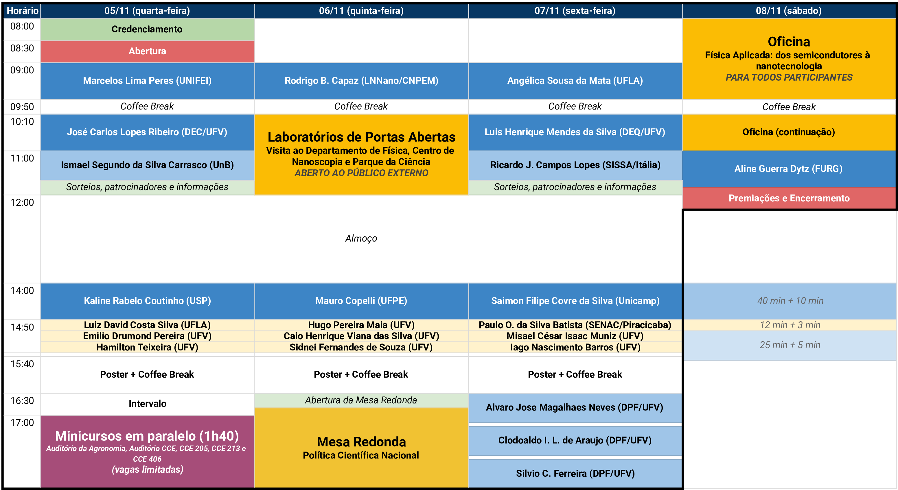

Livro de Resumos do VII Simpósio da Pós-Graduação em
Física/UFV
5 a 8 de novembro de 2025
Programa de Pós-Graduação em Física da Universidade
Federal de Viçosa (UFV) | ufv2025.simposiofisica.com
O Programa de Pós-Graduação em Física da UFV realiza em 2025 o VII
Simpósio da Pós-Graduação em Física - UFV. O objetivo deste simpósio é
promover a troca de experiência entre estudantes e reconhecidos
pesquisadores do cenário nacional. O evento tem como público alvo
estudantes de graduação e de pós-graduação do curso de Física e áreas
afins, bem como estudantes do ensino médio da rede pública e privada. As
atividades propostas para o simpósio incluem palestras por professores
convidados, apresentações orais de discentes, sessão de pôsteres,
laboratórios de portas abertas e mesa-redonda.
Cronograma

Mapa do evento
Local: Auditório do Departamento de Agronomia, Campus Viçosa da
UFV
CE1-01
– Detecção de férmions de Dirac em isolantes topológicos usando medidas
de magnetotransporte (Marcelos Lima Peres)
👤 Marcelos Lima Peres, Universidade Federal de Itajubá (UNIFEI) |
marcelos@unifei.edu.br
A detecção de férmions de Dirac em isolantes topológicos (ITs) por meio
de medidas de transporte representa um grande desafio para os
experimentalistas. O principal motivo é que os ITs não são realmente
isolantes, mas sim semicondutores de gap estreito altamente degenerados,
o que leva a uma contribuição massiva dos estados de bulk para o
transporte elétrico. Os esforços estão focados em separar a contribuição
dos estados de bulk e de estados topológicos de superfície (ETS) que
hospedam os férmions de Dirac. Para isso, altos campos magnéticos e
baixas temperaturas permitem a observação de oscilações de Shubnikov-de
Haas (SdH), das quais informações valiosas sobre a superfície de Fermi,
massas efetivas e fase de Berry podem ser extraídas. Além disso, para
campos magnéticos baixos, a observação do efeito de antilocalização,
originado do forte acoplamento spin-órbita, permite a identificação de
férmions de Dirac e férmions ordinários. Há alguns anos, foi descoberta
uma nova classe de materiais, denominada isolantes topológicos
cristalinos (ITCs), nos quais os ETS são protegidos por simetrias
cristalinas. Tanto os ITs quanto os ITCs fazem parte de um grupo mais
amplo, denominado materiais quânticos, nos quais os efeitos da mecânica
quântica alteram fundamentalmente as propriedades do material, levando a
novos estados da matéria condensada. O composto SnTe é classificado como
ITC devido à sua topologia eletrônica não trivial, protegida por
simetria cristalina, e é um material promissor para aplicações em
spintrônica e computação quântica. Nesta palestra, serão apresentados os
resultados de medições de magnetotransporte realizadas em nanoestruturas
baseadas em SnTe. A investigação envolverá a análise das oscilações de
Shubnikov-de Haas e do efeito antilocalização fraca em nanoestruturas de
SnTe, fornecendo uma descrição completa dos parâmetros importantes que
caracterizam o transporte elétrico nesses materiais.
CE1-02
– Panoramas e Desafios da Pós-Graduação em Física no Brasil
(Kaline Rabelo Coutinho)
👤 Kaline Rabelo Coutinho, Universidade de São Paulo (USP) |
kcoutinho@usp.br
A CAPES foi fundada em 1951. Em 1977, foram criadas as comissões de
assessores por área, para a avaliação e o acompanhamento dos
cursos/programas de pós-graduação stricto-sensu no Brasil, e foi
estabelecido o Conselho Técnico-Científico da Educação Superior
(CTC-ES). Em 1998, houve uma mudança substancial no processo de
avaliação com: (i) a padronização da ficha de avaliação para todos as
áreas, ou seja, os mesmos quesitos são avaliados, porém cada área pode
utilizar diferentes tipos de indicadores quantitativos e qualitativos; e
(ii) a criação do Qualis para avaliar a qualidade dos artigos
científicos baseado na classificação dos veículos de divulgação da
produção científica, por ser impraticável avaliar a qualidade de cada
uma das produções. Nesta época, a ficha de avaliação tinha 7 quesitos:
proposta do programa, corpo docente, atividades de pesquisa, atividades
de formação, corpo discente. Posteriormente, em 2013, a ficha passou a
ter 5 quesitos: proposta do programa (0%), corpo docente (20%), corpo
discente (35%), produção intelectual (35%) e inserção social (10%) e 17
itens distribuídos entre esses quesitos. Em 2017, a ficha passou a ter 3
quesitos: proposta do programa (1/3), formação e produção intelectual
(1/3) e impacto social (1/3) e 12 itens distribuídos entre esses
quesitos. Em 2025, a ficha tem 3 quesitos: proposta do programa (1/3),
formação e produção intelectual (1/3) e impacto social (1/3) e 10 itens
distribuídos entre esses quesitos. Agora, os programas de excelência,
além de obterem conceito MUITO BOM nos 3 quesitos da ficha de avaliação,
também devem demonstrar excelência nas 6 dimensões: Impacto na
Sociedade, Internacionalização, Objetivos de Desenvolvimento
Sustentáveis (ODS), Solidariedade e Nucleação, Interdisciplinaridade e
Boas práticas, incluindo obrigatoriamente a dimensão de
Internacionalização com referenciais nos cenários institucionais de
excelência mundial de cada área.
Na área de Astronomia/Física (AFIS), em 2013, cerca de 55% da
pontuação total da ficha de avaliação estava focada na
composição/formação/produção do corpo docente. Em 2017 e 2021, este
percentual reduziu para 45% e em 2015 reduziu para 18%. Esta redução de
pontuação no corpo docente vem mostrando que o foco da ficha está cada
vez mais migrando para o corpo discente, onde a quantidade e composição
diversificada, a formação, o destino profissional e a produção de
artigos científicos e/ou produtos técnicos/tecnológicos serão muito
valorizados. Os indicadores apontarão para: maior flexibilidade nos
objetivos e perfil formativo do discente; maior inserção da
Física/Astronomia Experimental/Observacional (disciplinas, discentes
titulados e produção); valorização de Física Aplicada com produção
tecnológica, inovação, interação com empresas, startup, etc; valorização
da atuação inter e multidisciplinar; maior qualidade das publicações e
menor ênfase na quantidade; novos indicadores do impacto social; e
estímulo a maior participação de mulheres e de jovens pesquisadores.
Referências gerais:
Rita de Cássia B. Barata, “Dez coisas que você deveria saber sobre o
Qualis”, RBPG v. 13, n. 30, p. 013 - 040, jan./abr. 2016,
http://dx.doi.org/10.21713/2358-2332.2016.v13.947
Documentos de área do site da CAPES: área Astronomia/Física – Memória da
área, link:
https://www.gov.br/capes/pt-br/acesso-a-informacao/acoes-e-programas/avaliacao/sobre-a-avaliacao/areas-avaliacao/sobre-as-areas-de-avaliacao/colegio-de-ciencias-exatas-tecnologicas-e-multidisciplinar/ciencias-exatas-e-da-terra/astronomia-fisica-memoria-da-area
Convidados Internos
CI1-01
– Desenvolvimento e avaliação de compostos cimentícios com adição de
nanomateriais (José Carlos Lopes Ribeiro)
👤 José Carlos Lopes Ribeiro, Universidade Federal de Viçosa (UFV) |
jcarlos.ribeiro@ufv.br
O melhor entendimento das propriedades elétricas dos materiais
cimentícios e o conhecimento recente em Nanociência e Nanotecnologia
possibilitaram o desenvolvimento de argamassas e concretos
multifuncionais capazes de desempenhar, além da função estrutural, a
medição de deformações e danos estruturais. Por serem quimicamente
inertes na matriz cimentícia, apresentarem elevada condutividade
elétrica e apresentarem menores custos de produção, nanopartículas de
carbon black (NCB) são atrativas para a fabricação desses nanocompósitos
cimentícios sensores. Para isso, adições com elevada condutividade
elétrica são dispersas na matriz cimentícia, a fim de formar uma extensa
rede condutora e diminuir a resistividade elétrica para valores próximos
àquela dos semicondutores. Ao se deformar no regime elástico ou sofrer
danos permanentes devido à atuação de carregamentos estáticos ou
dinâmicos, o material exibe mudanças em sua resistividade elétrica,
funcionando como um elemento sensor para medição de deformações ou para
identificação da evolução de fissuras. Diversas pesquisas foram
conduzidas na UFV visando o desenvolvimento de compostos cimentícios com
adição de nanofillers condutivos, com foco na: avaliação da resistência
mecânica e da rigidez de compostos cimentícios; avaliação da energia de
sonicação na dispersão das nanopartículas; avaliação da compatibilidade
mecânica entre compostos cimentícios sensores e elementos estruturais já
existentes; avaliação da retração e do uso de aditivos em compostos
cimentícios com nanoadições; construção de prismas de alvenaria com
juntas e unidades de concreto nanomodificadas; e avaliação de elementos
de alvenaria autossensores expostos a elevadas temperaturas. Por outro
lado, com foco na melhoria da resistência mecânica em temperatura
ambiente e em situação de incêndio, algumas pesquisas também foram
conduzidas tendo-se por base a adição de escória de aciaria e de
celulose nanofibrilada em compostos cimentícios. Por meio de um convênio
de pesquisa entre a UFV e a Embrapa Florestas, que forneceu diversas
amostras de celulose nanofibrilada, foram produzidos e avaliados
compostos cimentícios com vários teores de adições, por meio de um
projeto de experimentos composto central faceado (CCF). Nas pesquisas
realizadas, observou-se que há teores de adição que proporcionam a
melhoria da resistência mecânica e da rigidez dos compostos cimentícios
em situação de incêndio, o que endossa a importância e aplicabilidade
dessa linha de pesquisa.
CI1-02
– Modelagem do crescimento de filmes orgânicos finos (Ismael
Segundo da Silva Carrasco)
👤 Ismael Segundo da Silva Carrasco, Universidade de Brasília (UnB) |
ismael.carrasco@unb.br
O estudo dos fenômenos de crescimento de filmes finos é relevante uma
vez que diversos dispositivos eletrônicos são fabricados por meio desse
processo. Nas últimas décadas, o interesse por materiais semicondutores
orgânicos cresceu consideravelmente, impulsionado por seu baixo custo,
leveza e flexibilidade. No entanto, o uso desses materiais geralmente
resulta em menor eficiência e vida útil mais curta do que a dos
semicondutores inorgânicos. Superar esses problemas exige uma melhor
compreensão dos processos de crescimento, incluindo as estruturas e
morfologias formadas. Nesta apresentação, iniciamos com uma breve
revisão dos regimes esperados para a homoepitaxia [1,2]. Considerando
que a maior parte do crescimento de filmes finos orgânicos ocorre sobre
substratos de materiais diferentes, e levando em conta o menor acúmulo
de tensões devido às interações mais fracas de van der Waals, modelamos
inicialmente o crescimento heteroepitaxial livre de deformações.
Mostramos que as interações mais fracas entre filme e substrato
favorecem um regime inicial de crescimento com a formação de ilhas
tridimensionais (ISL) [3]. Nos estágios iniciais, a nucleação e expansão
das ilhas promovem um rápido aumento da rugosidade. À medida que as
ilhas coalescem, a rugosidade atinge um máximo e em seguida diminui
abruptamente, o que ocorre quando o substrato é recoberto e se torna
irrelevante, passando o crescimento a ocorrer camada por camada (LBL).
Por fim, confirmamos a presença desse regime ISL em filmes experimentais
de C60 e HATCN, nos quais medições morfológicas revelam uma evolução da
rugosidade consistente com o nosso modelo [4].
[1] I. S. S. Carrasco, T. B. T. To, F. D. A. A. Reis; “Scaling of
surface roughness in film deposition with height-dependent step edge
barriers”; Phys. Rev. E 108, 064802 (2023).
[2] E. E. M. Luis, I. S. S. Carrasco, F. D. A. A. Reis;
“Layer-by-layer growth, apparent instability, and mound coarsening in
thin film deposition controlled by thermally activated surface
diffusion”; Mat. Today Comm. 42, 111122 (2025).
[3] F. Munko, C. C. Luukkonen, I. S. S. Carrasco, F. D. A. A. Reis,
M. Oettel; “Island formation in heteroepitaxial growth”; Phys. Rev. E
111, 035501 (2025).
[4] I. S. S. Carrasco, D. Lapkin, C. C. Luukkonen, A. Hinderhofer, F.
Schreiber, M. Oettel, F. D. A. Aarão Reis; “Island formation and
non-monotonic roughness evolution driven by molecular mobility
difference in ultrathin organic film deposition”; Submetido.
Minicursos
MC1-01
– CNPEM: Instalações e Envio de Propostas de Pesquisa (Thamires
Cordeiro Soares)
O CNPEM (Centro Nacional de Pesquisa em Energia e Materiais)
disponibiliza sua infraestrutura para pesquisadores de diversas áreas do
conhecimento. Neste minicurso, serão apresentados os principais recursos
oferecidos pelo centro, com destaque para os procedimentos de submissão
de propostas de pesquisa. Serão abordadas as etapas do processo, os
critérios de avaliação e orientações práticas para o uso do sistema de
submissão, com o objetivo de auxiliar estudantes de graduação e de
pós-graduação na elaboração de propostas competitivas.
Pré-requisitos: Interesse em conhecer o CNPEM, uma das maiores
infraestruturas científicas do país, e/ou em submeter propostas para
utilizar seus recursos em pesquisas.
MC1-02
– Estabilidade da Matéria (Daniel Heber Theodoro
Franco)
📌 Prédio do CCE - Sala 205
👤 Daniel Heber Theodoro Franco, Universidade Federal de Viçosa (UFV)
| daniel.franco@ufv.br
A estabilidade é um conceito importante em física e a noção é usada
em vários contextos. Por exemplo, a estabilidade da matéria pode
referir-se à estabilidade física, que garante que objetos formados por
partículas não desintegrem, ou à estabilidade química, que descreve a
tendência de substâncias atingirem o estado de menor energia, ou seja,
um equilíbrio com o ambiente. A estabilidade também pode ser observada
na estabilidade nuclear, onde a energia de ligação entre os nucleons no
núcleo determina a sua resistência à desintegração.
É um tanto surpreendente que a estabilidade da matéria não seja um
assunto amplamente tratado nos livros-texto de física padrão. No
entanto, é um dos resultados mais celebrados da física-matemática.
Talvez a razão pela qual a estabilidade da matéria não seja tratada nos
livros de física não seja por sua falta de importância, mas,
provavelmente, pelo fato de não ser fácil derivá-la. A primeira solução
para este problema foi fornecida por Freeman Dyson e Andrew Lenard em
1967-1968, mas uma prova mais curta e conceitual foi encontrada mais
tarde por Elliott Lieb e Walter Thirring em 1975 usando uma
desigualdade, hoje em dia denominada Desigualdade de Lieb-Thirring.
Neste mini-curso, fornecemos um resumo de cinco décadas de pesquisas
realizadas, principalmente por Lieb e seus colaboradores, sobre a
estabilidade da matéria em várias situações físicas.
Pré-requisitos: Mecânica Quântica e Cálculo Avançado.
MC1-03
– Introdução à Física de Redes Complexas (Hugo Pereira
Maia)
📌 Prédio do CCE - Auditório
👤 Hugo Pereira Maia, Universidade Federal de Viçosa (UFV) |
hugopereiramaia@gmail.com
A Ciência de Redes, embora recente em comparação a outras áreas da
Física, tornou-se rapidamente uma ferramenta essencial para o estudo de
Sistemas Complexos, possuindo aplicações em áreas diversas que variam de
Biologia e Ecologia até questões sociológicas, econômicas e
epidemiológicas, dentre outras. Este minicurso tem como objetivo
apresentar conceitos fundamentais da área, abordando representações
matemáticas, propriedades estruturais e alguns dos principais modelos de
redes. Também serão discutidos exemplos de aplicações e o papel da
Física para contribuir no avanço dessa instigante área
interdisciplinar.
Pré-requisitos: Para uma boa compreensão dos temas abordados, os
interessados precisarão apenas de um entendimento básico de cálculo e
estatística, idealmente tendo também um conhecimento de Termodinâmica
Estatística para uma compreensão avançada sobre o tema.
MC1-04 –
Introdução à teoria de grupos (Winder A. Moura
Melo)
📌 Prédio do CCE - Sala 213
👤 Winder A. Moura Melo, Universidade Federal de Viçosa (UFV) |
winder@ufv.br
Pretende-se apresentar, de modo claro e intuitivo, alguns aspectos
fundamentais de teoria de grupos. O enfoque será em sua importância e
utilidade em Física, não a questões formais.
Pré-requisitos: Uma base mínima, composta pelo conteúdo de Cálculo 1,
bem como, algumas noções elementares de geometria e de álgebra, são
necessários.
MC1-05
– Introdução ao C++ e à Programação Orientada a Objetos (Alan
Augusto da Silva Reis)
📌 Prédio do CCE - Sala 406
👤 Alan Augusto da Silva Reis, Universidade Federal de Viçosa (UFV) |
alan.reis@ufv.br
A linguagem C++, juntamente com todas as suas funcionalidades, é
extremamente vasta e aprendê-la em pouquíssimo tempo é uma tarefa quase
impossível. Quem está começando na linguagem ou até mesmo a trabalhar
com programação, poderá cair em diversas armadilhas e precisará de
grande esforço para não a abandonar na primeira violação de acesso
encontrada. Neste minicurso será apresentada uma visão geral dos
principais conceitos e das possíveis armadilhas que o C e C++ trazem,
assim como o tratamento adequado delas. Também será introduzido a
programação orientada a objetos que é base de grandes APIs modernas e
que, independentemente da linguagem usada, os conceitos são extremamente
parecidos em diferentes linguagens de modo que o estudante poderá
aplicar alguns dos temas abordados usando sua linguagem de preferência.
Será apresentada uma visão geral dos mecanismos de alocação de memória,
suas possíveis armadilhas, tratamento de exceções, classes, herança,
polimorfismo, dentre outros.
Pré-requisitos: Ter uma experiência prévia com programação, de
preferência C e interesse em migrar ou compreender os recursos que a
programação orientada a objetos pode oferecer.
Apresentações orais
A1-01
– Sintonia da Resolução de um Sensor de Índice de Refração por
Interferência Multimodal Utilizando um Interferômetro de Fabry-Perot
(Luiz David Costa Silva)
👤 Luiz David Costa Silva, Universidade Federal de Lavras (UFLA) |
luiz.silva42@estudante.ufla.br
Autores: Luiz David Costa Silva - Universidade
Federal de Lavras (UFLA), João Gabriel Marques de Carvalho -
Universidade Federal de Lavras (UFLA), Flavio Augusto De Melo Marques -
Universidade Federal de Lavras (UFLA), Alexandre Alberto Chaves Cotta -
Universidade Federal de Lavras (UFLA), Leomar Santos Marques -
Universidade Federal de Lavras (UFLA), Jonas Henrique Osório -
Universidade Federal de Lavras (UFLA), Jefferson Esquina Tsuchida -
Universidade Federal de Lavras (UFLA)
O Interferômetro de Fabry-Perot (FPI) consiste em um ressonador óptico
de alta precisão, formado por uma cavidade ressonante entre duas
superfícies refletoras paralelas. A operação deste dispositivo
fundamenta-se na interferência de múltiplos feixes de luz, que são
refletidos diversas vezes dentro da cavidade. A cada reflexão, parte da
luz é transmitida, e a superposição desses feixes resulta em um espectro
caracterizado por picos de ressonância bem definidos, cujo comportamento
é influenciado pelo meio que preenche a cavidade. Em aplicações de
sensoriamento com fibra óptica, a configuração de cavidade extrínseca
(EFPI) é amplamente utilizada. Nela, a cavidade ressonante é externa à
fibra guia, tipicamente formada entre a face da própria fibra (primeiro
refletor) e uma superfície externa paralela (segundo refletor), criando
um vão entre elas. No presente trabalho, esta configuração de
Fabry-Perot é aplicada para aprimorar a resolução de um sensor de índice
de refração com estrutura SMS (Single-Mode - Multimode - Single-Mode).
Embora estruturas SMS sejam sensíveis a variações no índice de refração
externo, elas geram um espectro com picos e vales largos, o que limita a
resolução da medição. Ao integrar a cavidade Fabry-Perot na ponta do
sensor, cria-se uma estrutura híbrida cujo espectro final é uma
superposição: as franjas de alta resolução do FPI são moduladas pelo
envelope espectral gerado pela estrutura SMS.
A1-02 –
Spin one matter fields (Emilio Drumond Pereira)
👤 Emilio Drumond Pereira, Universidade Federal de Viçosa (UFV) |
emilio.drumond@ufv.br
Autores: Daniel O. R. Azevedo - Universidad de la
Republica Uruguay (UDELAR), Oswaldo M. Del Cima - Universidade Federal
de Viçosa (UFV), Thadeu S. Dias - Universidade Federal de Viçosa (UFV),
Daniel H. T. Franco - Universidade Federal de Viçosa (UFV), Emílio D.
Pereira - Universidade Federal de Viçosa (UFV), Olivier Piguet -
Permanent address: Aracaju, SE, Brazil
A couple of years before the creation of the Standard Model, Arnowitt
and Deser discussed the problem of coupling a set of two vector fields
of electric charge \pm e with the
electromagnetic field. They showed that the only consistent way to
achieve this is within an SU(2)
non-Abelian Yang–Mills theory, the gauge field multiplet of the latter
being composed of the electromagnetic field together with the spin one
matter fields. So, due to the possibility of spin matter fields
describing hadronic systems and being possible candidates for physics
beyond the standard model, in this work, we propose a definition of
“spin one matter fields” \phi_\mu^i
coupled to a given non-Abelian Yang– Mills theory with gauge algebra
\mathfrak{g} and gauge fields A_\mu^a. These massless fields belong to a
larger Yang-Mills theory with gauge algebra \mathfrak{g}_{\rm tot}\supset\mathfrak{g} and \phi_\mu^i are required to transform in some
representation R of the gauge algebra
\mathfrak{g}. Using the BRST framework,
we develop a general structure for this coupling and obtain as a result
some restrictive conditions. Exploring these conditions, in addition to
recovering the Arnowitt-Deser model, we explore some examples for the
initial Lie algebra, as well, \mathfrak{so}(N) and \mathfrak{u}(1)\oplus\mathfrak{su}(2). In the
latter, we evaluate cases of different isospin for \phi_\mu^i. We conclude that the construction
performed has quite selective conditions and leads to the realization of
an “embedding” of a Lie algebra in another larger Lie algebra.
A1-03
– Diodo magnético baseado em spin ice artificial com interface entre
redes quadrada e retangular (√3) (Hamilton
Teixeira)
👤 Hamilton Teixeira, Universidade Federal de Viçosa (UFV) |
hamilton.teixeira@ufv.br
Autores: H.A. Teixeira - Universidade Federal de
Viçosa (UFV), C.I.L. de Araujo - Universidade Federal de Viçosa (UFV),
F.S. Nascimento - Universidade Federal do Recôncavo Baiano (UFRB)
Neste trabalho propomos e demonstramos experimentalmente um diodo
magnético baseado em uma rede híbrida de artificial spin ice, composta
por duas regiões de diferentes simetrias: uma metade com geometria
quadrada e a outra com um dos lados multiplicado por √3(raiz de 3),
formando uma rede retangular. As nanoilhas de Permalloy foram fabricadas
por litografia eletrônica seguida de eletrodeposição, com morfologia
confirmada por microscopia eletrônica de varredura (MEV). As
configurações magnéticas foram analisadas por microscopia de força
magnética (MFM) sob campos externos aplicados em direções positiva e
negativa. A evolução das topologias revelou nucleação e mobilidade
distintas das cargas magnéticas do tipo “in” e “out” em cada sub-rede.
Observamos uma assimetria marcante: sob campo negativo, monopolos
permanecem aprisionados na interface, enquanto sob campo positivo há
favorecimento da emissão e propagação de monopolos livres. Essa
diferença foi quantificada pela densidade relativa de cargas magnéticas
em função do campo, evidenciando um comportamento não linear e não
simétrico, típico de um processo de retificação. Os resultados foram
corroborados por simulações micro magnéticas no Mumax³, que reproduziram
tanto a nucleação preferencial quanto a barreira direcional imposta pela
interface. Dessa forma, demonstramos que a combinação de redes quadrada
e retangular constitui um mecanismo eficiente para a implementação de
diodos magnéticos em artificial spin ice. Este resultado representa um
passo importante rumo ao desenvolvimento de elementos lógicos e
dispositivos de spintrônica baseados no controle do transporte de
monopolos artificiais.
Pôsteres
P1-01
– Estudo Hidrodinâmico da Formação de Coágulos em Sistemas de Vasos
Sanguíneos através do Método de Rede de Boltzmann (Alan Augusto
da Silva Reis)
👤 Alan Augusto da Silva Reis, Universidade Federal de Viçosa (UFV) |
alan.reis@ufv.br
Autores: Alan Augusto da Silva Reis - Universidade
Federal de Viçosa (UFV), Alvaro Vianna Novaes de Carvalho Teixeira -
Universidade Federal de Viçosa (UFV)
O método de Rede de Boltzmann, que tem suas bases na física estatística,
é amplamente adotado em simulações hidrodinâmicas na atualidade. Ao
contrário dos métodos tradicionais de CFD (computational fluid
dynamics), o método se destaca devido à sua capacidade em lidar com
geometrias complexas e por isso vem sendo cada vez mais utilizado em
sistemas biológicos. Neste trabalho, o método foi empregado para simular
o desenvolvimento de um coágulo/trombo com um regime misto, ou seja, um
regime intermediário entre o regime de vazão constante e diferença de
pressão constante, em que o desenvolvimento da geometria do coágulo foi
controlada pela taxa de cisalhamento em sua superfície. As três etapas
de crescimento do coágulo, que estão presentes em casos experimentais de
coágulos induzidos em ratos, foram encontradas pelo modelo tal que na
primeira, o coágulo cresce prioritariamente no local da lesão, de tal
forma que o crescimento é em sua maior parte na vertical. Já na segunda,
o coágulo começa a se dobrar e o crescimento aumenta na horizontal, de
tal forma que parte da sua massa, sujeita à grandes forças
hidrodinâmicas, começa a ser transferidas para trás do coágulo formando
um alongamento posterior ao fluxo. E por fim, a etapa de “estabilização
estrutural” começa e o coágulo tende a diminuir sua área, tal estágio
que foi possibilitado pelo modelo misto proposto. Com isso pôde ser
constatada a importância do modelo misto, pois o modelo com diferença de
pressão constante, o coágulo obstrui totalmente o canal, já mantendo-se
a vazão constante a terceira etapa não era bem descrita e para o modelo
misto, em que a vazão foi alterada quando a diferença de pressão entre a
entrada e a saída do canal ultrapassava um valor de corte, mostrou-se
bem satisfatório tanto na reprodução das três etapas de crescimento
quanto na comparação com os dados in vivo.
P1-02
– Fracionalização de carga em isolantes topológicos tridimensionais
(Ricardo Junior Machado)
👤 Ricardo Junior Machado, Universidade Federal de Viçosa (UFV) |
ricardo.machado@ufv.br
Autores: Ricardo Junior Machado - Universidade
Federal de Viçosa (UFV)
A fracionalização de carga elétrica é um dos fenômenos emergentes mais
intrigantes da física da matéria condensada, desafiando a noção de que a
carga elétrica deva ocorrer apenas em múltiplos inteiros da carga do
elétron. O conceito de carga fracionária surgiu na teoria quântica de
campos, quando Jackiw e Rebbi mostraram que a equação de Dirac em
espaço-tempo ((1+1))-dimensional admite um modo zero quando o termo de
massa sustenta uma única parede de domínio. Eles também mostraram que,
ao realizar a segunda quantização da equação de Dirac na presença desse
modo zero, o espectro do operador de carga fermiônica de muitas
partículas é deslocado em (1/2) em relação ao espectro do operador de
carga fermiônica de muitas partículas para um termo de massa constante.
Esse resultado fundamentou a compreensão do fenômeno em sistemas de
matéria condensada unidimensionais, como o poliacetileno descrito pelo
modelo de Su-Schrieffer-Heeger (SSH), e motivou extensões a sistemas
bidimensionais, como o modelo de Hou-Chamon-Mudry (HCM) para o grafeno
com distorção de Kekulé. Este trabalho investiga a possibilidade de
realizar mecanismos análogos de fracionalização de carga em isolantes
topológicos tridimensionais (ITs 3D), materiais cuja superfície é
descrita por férmions de Dirac sem massa protegidos pela simetria de
reversão temporal. Os resultados obtidos contribuem para identificar
critérios teóricos que viabilizam a fracionalização de carga em ITs 3D
e, além de aprofundar a compreensão fundamental do fenômeno, este estudo
fornece subsídios para futuras investigações sobre possíveis realizações
experimentais, especialmente a partir de heteroestruturas que combinem
ITs 3D e supercondutores convencionais.
P1-03
– Unconventional Inverse Orbital Hall Response in Nb/Pt/YIG Structures
(Iago Greca Rossanes Fontes)
👤 Iago Greca Rossanes Fontes, Universidade Federal de Viçosa (UFV) |
iago.fontes@ufv.br
Autores: Iago G. R. Fontes - Universidade Federal de
Viçosa (UFV), Gabriel R. Gallo - Universidade Federal de Viçosa (UFV),
Gilberto R. S. Júnior - Universidade Federal de Viçosa (UFV), Rafael O.
R. R Cunha - Universidade Federal de Viçosa (UFV), Joaquim B. S. Mendes
- Universidade Federal de Viçosa (UFV)
The field of spintronics has been central to modern technology, enabling
non-volatile memories and inspiring spin-based logic devices. Its appeal
stems from the efficiency of spin-dependent transport phenomena.
However, key effects such as the spin Hall effect (SHE) and its inverse
(ISHE) depend on spin–orbit coupling (SOC) for the generation and
detection of spin currents, thus being limited to heavy metals such as
Pt and W. In contrast, the interplay between spin and orbital angular
momentum currents defines the emerging field of orbitronics. Unlike spin
currents, orbital currents can propagate over longer distances and
through a wider variety of materials. Since orbitronics exploits the
orbital degrees of freedom of electrons and does not require strong SOC,
it broadens the material landscape and may yield higher
orbital-to-charge conversion efficiencies through the orbital Hall
effect (OHE) and its inverse (IOHE). Yet, the mechanisms governing the
reciprocal conversion among spin, orbital, and charge currents remain
only partially understood, especially because orbital-current phenomena
have been reported only recently. To address this, we performed
longitudinal spin Seebeck effect (LSSE) measurements on YIG/Pt/Nb
heterostructures, where thermally generated spin currents in YIG are
injected into the Pt layer. The strong SOC in Pt mediates the coupling
between spin and orbital angular momenta, injecting a spin–orbital
current into Nb, where the orbital component is subsequently converted
into charge current via the IOHE. Our results reveal an unconventional
dependence of the orbital Hall angle on Nb thickness, displaying two
distinct conversion regimes: a negative conversion for Nb thinner than
10 nm and a positive conversion for thicker films. This behavior lies
beyond the predictions of current theoretical models and provides key
insights into the coupling mechanisms between spin and orbital currents
and the orbital-to-charge conversion mediated by the IOHE.
P1-04
– Aplicação de novos materiais em sensores microeletrônicos de baixo
custo para detecção de Alzheimer (Joana Perrout de
Andrade)
👤 Joana Perrout de Andrade, Universidade Federal de Viçosa (UFV) |
joana.andrade@ufv.br
Autores: Joana Perrout de Andrade - Universidade
Federal de Viçosa (UFV), Bruno Carvalho Públio - Universidade Federal de
Viçosa (UFV), Hamilton Aparecido Teixeira - Universidade Federal de
Viçosa (UFV), José Carlos de Moraes Silva - Universidade Federal de
Viçosa (UFV), Clodoaldo Irineu Levartoski de Araujo - Universidade
Federal de Viçosa (UFV)
O Alzheimer é uma doença neurodegenerativa que acomete o sistema nervoso
e afeta diversas funções cognitivas, atingindo cerca de 1,2 milhões de
pessoas no Brasil. Uma das causas do transtorno é o acúmulo gradativo da
proteína Beta Amiloide no interior dos neurônios, o que compromete o
funcionamento celular. Nesse cenário, estão sendo desenvolvidos métodos
para a detecção da proteína em amostras sanguíneas como forma de
diagnóstico precoce. Tal procedimento é relevante, visto que o
procedimento atual é complexo e tardio. Diante disso, esta pesquisa
propõe o desenvolvimento de um biossensor de baixo custo e de alta
eficiência para suprir essa lacuna tecnológica do mercado nacional. O
projeto para o dispositivo inclui 3 eletrodos com uma camada de prata e
uma camada de grafeno e óxido de grafeno, com anticorpos específicos da
proteína beta-amiloide ancorados. Quando a substância está presente na
amostra sanguínea, ela se liga ao anticorpo causando uma alteração no
circuito elétrico, observada via voltametria cíclica, sendo possível
diagnosticar precocemente a doença. A pesquisa se encontra nos estágios
iniciais da fabricação do dispositivo. Está sendo explorada uma
abordagem baseada na técnica de silk screen, utilizando uma camada de
tinta condutiva de prata e uma camada de tinta condutiva de grafeno. Em
seguida, será adicionado uma solução óxido de grafeno para, enfim,
ancorar os anticorpos. Durante o processo, serão utilizadas diversas
formas de caracterização do dispositivo a fim de garantir a qualidade do
sensor. Em conclusão, o sensor proposto representa uma alternativa
promissora para o diagnóstico do Alzheimer, que possibilita que o
tratamento seja implementado em um estágio inicial dos sintomas,
oferecendo uma potencial melhora na qualidade de vida dos pacientes. A
pesquisa é extremamente relevante não somente para o diagnóstico desta
doença, mas também para o entendimento dessa tecnologia de detecção, que
pode, posteriormente, ser aplicada em outras áreas.
P1-05
– Micromagnetic Simulation of Nd2Fe14B thin film
exchange coupled vs. exchange decoupled grains (Lucas Martinho
Bicalho Belo)
👤 Lucas Martinho Bicalho Belo, Universidade Federal de Minas Gerais
(UFMG) | lucasbicalho198@gmail.com
Autores: Lucas Martinho Bicalho-Belo - Universidade
Federal de Minas Gerais (UFMG), Luis Eugenio Fernandez-Outon -
Universidade Federal de Minas Gerais (UFMG)
Rare-earth permanent magnets, particularly NdFeB, are critical for
modern technologies, yet their performance is limited by their complex
mechanism of coercivity. The properties of the intergranular phase
between the hard-magnetic NdFeB grains play a decisive role in
controlling coercivity. This work presents a micromagnetic study
investigating the impact of grain boundary (GB) properties on the
magnetic performance of NdFeB thin films. We simulated a 40 nm
polycrystalline thin film with a Voronoi tessellation microstructure.
Using the MuMax3 software, we compared systems with magnetically soft
GBs against those with perfectly non-magnetic GBs. The magnetic behavior
was analyzed by simulating the second quadrant demagnetization curve.
Our results confirm that magnetic decoupling via a nonmagnetic GB phase
simultaneously increases coercivity and reduces remanence, aligning with
established theory and experimental observations. This is attributed to
the isolation of grains, which inhibits the nucleation and propagation
of reversal. This study validates a computational framework for
designing high-performance magnets.
P1-06
– Investigação das interações da molécula de DNA com elementos
terras-raras (Josiane Aparecida Duarte Batista)
👤 Josiane Aparecida Duarte Batista, Universidade Federal de Viçosa
(UFV) | josianedbatista@gmail.com
Autores: Josiane Aparecida Duarte Batista -
Universidade Federal de Viçosa (UFV), Márcio Santos Rocha - Universidade
Federal de Viçosa (UFV)
Os óxidos de Európio (Eu2O3), Érbio (Er2O3), Itérbio (Yb2O3) e Neodímio
(Nd2O3) foram usados para avaliar a afinidade destes elementos de terras
raras na interação com moléculas de DNA de fita dupla. Para realizar o
estudo, utilizamos espectroscopia de força de molécula única com pinças
ópticas e ensaios de eletroforese em gel. Os ensaios de espectroscopia
de força mostram que todas as quatro terras raras estudadas apresentaram
uma forte interação com o DNA de fita dupla. A interação entre o Eu2O3 e
a molécula de DNA é independente da força iônica usada no ambiente
circundante. O Eu2O3 tende a se ligar de forma cooperativa, formando
aglomerados de moléculas (∼ 3) e apresenta uma alta constante de ligação
de associação de equilíbrio da ordem de 105 M− 1. Além disso, a
eletroforese em gel confirma o caráter eletrostático fraco da interação
e mostra explicitamente que o Eu2O3 não interfere na intercalação na
dupla hélice. O Er2O3 apresenta uma forte interação com o DNA de fita
dupla, condensando-o fortemente para concentrações acima de 0,04 µM,
levando a uma redução de mais de 50% do seu comprimento de contorno.
Além de possuírem alta afinidade com a molécula, pois possuem uma
constante de ligação de associação de equilíbrio da ordem de 106 M-1 a
107 M-1. Para o Yb2O3 e o Nd2O3, observamos que além de alta afinidade,
eles são também cooperativos, indicando que quando se ligam à molécula
de DNA, colaboram com a próxima ligação que acontecerá, formando
aglomerados de moléculas semelhantes ao Eu2O3. Tais resultados
demonstram o potencial das terras raras para interagir com ácidos
nucléicos e sugerem fortemente que esses elementos de terras raras
possam ser considerados para o projeto de novos fármacos
anticancerígenos à base de metais.
P1-07
– Physical and Electrochemical Characterization of Nickel
Hexacyanoferrate Thin Films (Mariana Ribeiro
Rezende)
👤 Mariana Ribeiro Rezende, Universidade Federal de Viçosa (UFV) |
mariana.r.rezende@ufv.br
Autores: Mariana Ribeiro Rezende - Universidade
Federal de Viçosa (UFV), Renê Chagas da Silva - Universidade Federal de
Viçosa (UFV), Gustavo Santos Dias Ferreira - Universidade Federal de
Viçosa (UFV)
The development of new materials for charge storage devices is a key
technological area, driven by the demand for high-efficiency, low-cost
batteries. Among these, Nickel Hexacyanoferrate (NiHCF) is a promising
electrode material, featuring a highly ordered cubic structure and
remarkable stability during charge/discharge cycles. This compound also
has potential applications in sensors, supercapacitors, and
electrochromic devices. This project details the electrochemical
synthesis and characterization of NiHCF thin films to evaluate their
potential. The films were prepared via electrochemical derivatization of
nickel layers previously deposited on silicon substrates by sputtering.
The conversion was performed using cyclic voltammetry in a conventional
three-electrode cell, with the amount of NiHCF controlled by the number
of voltammetric cycles. The physical and electrochemical properties were
investigated using multiple techniques. Scanning Electron Microscopy
(SEM) images showed the formation of compact grains, homogeneous in
shape and size. Energy Dispersive Spectroscopy (EDS) confirmed the
presence of Fe, C, N, and K atoms, validating the compound’s formation.
Electrochemical Impedance Spectroscopy (EIS) was used to investigate the
material’s response to applied potentials, allowing the determination of
key properties such as electrical resistance and capacitance. All
properties were successfully correlated with the synthesis parameters.
P1-08
– Fibra Óptica e Estrutura Impressa em 3D para Sensor de Deslocamento
com Análise de Speckle (Enzo Dantas da Silva)
👤 Enzo Dantas da Silva, Universidade Federal de Lavras (UFLA) |
enzods13@hotmail.com
Autores: Gabriel Leonardo da Silva - Universidade
Federal de Lavras (UFLA), Enzo Dantas da Silva - Universidade Federal de
Lavras (UFLA), Flávio Augusto de Melo Marques - Universidade Federal de
Lavras (UFLA), Alexandre Alberto Chaves Cotta - Universidade Federal de
Lavras (UFLA), Jefferson Esquina Tsuchida - Universidade Federal de
Lavras (UFLA), Diego Cardoso Fuzatto - Universidade Federal de Lavras
(UFLA), Jonas Henrique Osório - Universidade Federal de Lavras (UFLA),
Leomar Santos Marques - Universidade Federal de Lavras (UFLA)
A combinação entre fibras ópticas e estruturas produzidas por impressão
3D tem se mostrado uma estratégia promissora para o desenvolvimento de
sensores compactos e versáteis. Neste trabalho, apresentamos um sensor
de deslocamento formado por uma fibra óptica embutida em uma estrutura
impressa em 3D. O funcionamento do sensor baseia-se na interferência
entre modos de luz que se propagam pelo núcleo da fibra, resultando em
padrões de speckle. Quando aplicamos um deslocamento na estrutura, o
modo como a luz se propaga na fibra muda, alterando o padrão de speckle.
A partir dessas mudanças, é possível relacionar o deslocamento aplicado
com a resposta óptica observada. Este estudo busca contribuir para o
avanço de sensores baseados em fibras ópticas com análise de padrões de
speckle.
P1-09
– Influência da Força de Atrito na Dinâmica de Sistemas de Partículas
Biofísicas: Uma Abordagem Numérica Preliminar (Ana Lidia Santos
Miranda)
👤 Ana Lidia Santos Miranda, Universidade Federal de Juiz de Fora
(UFJF) | ana.miranda@estudante.ufjf.br
Autores: Ana Lídia Santos Miranda - Universidade
Federal de Juiz de Fora , Pablo Zimmermann Coura - Universidade Federal
de Juiz de Fora
A força de atrito ainda apresenta grandes questões em aberto devido a
sua complexidade de estudo. O atrito surge a partir da interação entre
duas superfícies em contato que apresentam um movimento relativo. Logo,
pode-se estipular que é uma força interna de oposição a uma forma
externa, e é responsável pela propulsão de movimento. A complexidade no
estudo da força de atrito aumenta para escalas pequenas de sistemas.
Quando consideramos simulação em microescala, algumas variáveis que
podem ser descartadas em um atrito macroscópico, devem ser consideradas.
E frequentemente interações entre superfícies apresentam grande
contribuição para a dinâmica do sistema em pequenas escalas. Fomos
motivados pelos artigos Plexin-B2 orchestrates collective stem cell
dynamics via actomyosin contractility, cytoskeletal tension and adhesion
(https://doi.org/10.1038/s41467-021-26296-7 ), que discute a importância
da proteína Plexin-B2 na estrutura celular, apresentando também uma
modelo computacional e Invasion of glioma cells through confined space
requires membrane tension regulation and mechano-electrical coupling via
Plexin-B2 (https://doi.org/10.1038/s41467-024-55056-6), o qual analisa o
comportamento e a dinâmica de glioblastomas em ambientes sob constrição.
Neste trabalho, buscamos entender como a força de atrito atua sobre o
movimento de um sistema. Adaptamos o código aberto
diasrodri/SimCellMD-1: first release de forma a estudar a dinâmica de
partículas de um sistema sujeito a um potencial de atrito. A partir de
uma simulação computacional, descrevemos um sistema de duas paredes
paralelas e infinitas, que representam os potenciais de repulsão, e uma
linha de moléculas paralela e restrita entre as paredes. Para esse
estudo, variamos a distância entre as paredes e número total de
partículas. Dentre os resultados obtidos, pudemos verificar como o
atrito contribui de diferentes formas para diferentes combinações
lineares de parâmetros propostos.
P1-10
– Spin-to-Charge Conversion in Topological Crystalline Insulator SnTe
with In-Situ Deposited Permalloy Layer via Molecular Beam Epitaxy
(Robson César de Oliveira Guedes)
👤 Robson César de Oliveira Guedes, Universidade Federal de Viçosa
(UFV) | rcoguedes@gmail.com
Autores: R. C. O. Guedes - Universidade Federal de
Viçosa (UFV), G.R. Junior - Universidade Federal de Viçosa (UFV), R. O.
R. R. Cunha - Universidade Federal de Viçosa (UFV), J. B. S. Mendes -
Universidade Federal de Viçosa (UFV)
Topological Crystalline Insulators (TCIs) are materials that exhibit
robust, dissipationless conduction channels on their surfaces or edges,
while their bulk remains electrically insulating. These surface states
are protected by crystal symmetry and feature spin-momentum locking,
where the electron spin is always orthogonal to its momentum. As a
result, an electric current induces a net spin polarization on the
surface—a phenomenon known as the Rashba-Edelstein Effect (REE), which
enables efficient spin-to-charge conversion. TCIs are promising for
spintronic applications due to their strong spin-orbit coupling, long
spin correlation length, and robust surface conduction. They enable
high-efficiency interconversion between charge and spin current
densities, essential for low-power, high-speed information transport.
Consequently, understanding spin-current behavior in TCIs is crucial for
developing next-generation spintronic and quantum information devices.
This work reports the fabrication, structural characterization, and
investigation of the spin-to-charge conversion efficiency in the
topological crystalline insulator Tin Telluride (SnTe). We aim to
determine whether the Inverse Rashba-Edelstein Effect (IREE) or the
Inverse Spin Hall Effect (ISHE) dominates the conversion process.
Spin-to-charge interconversion was studied using Spin Pumping
Ferromagnetic Resonance (SP-FMR) at room temperature. The SnTe layer was
grown by Molecular Beam Epitaxy (MBE) and covered in situ with a
Permalloy film under ultra-high vacuum, ensuring a clean and
high-quality interface. This approach provides a reliable platform for
exploring spin dynamics and designing efficient, low-cost spintronic
devices based on topological materials.
P1-11
– Curvature-Induced Effects on the Skyrmions Motion Along Bent Nanotubes
(José Ignacio Costilla Pinedo)
👤 José Ignacio Costilla Pinedo, Universidade Federal de Viçosa (UFV)
| jose.pinedo@ufv.br
Autores: José Costilla - Universidade Federal de
Viçosa (UFV), Mario Castro - Universidad de Chile (USACH), Dora Altbir -
Universidad Diego Portales (UDP), Vagson Carvalho Santos - Universidade
Federal de Viçosa, Volodymyr Kravchuk - Institute for Theoretical Solid
State Physics (IFW Dresden)
Magnetic skyrmions are nanoscale topological spin textures with
promising applications in next-generation spintronic devices due to
their stability and low critical current for motion. Theoretical and
experimental advances have highlighted the importance of curvature in
modifying skyrmion properties revealing that geometric curvature can act
as enhanced stability of skyrmionic textures. This work proposes the use
of racetrack memories based on bent nanotubes as a method to suppress
the skyrmion Hall effect. To achieve this, a generalized theoretical
model of the Thiele equation was developed to describe the dynamics of
skyrmions under arbitrary curvature, taking into account the effects of
Zhang–Li spin-transfer torque. The results show that the curvature of
the bent nanotube significantly modifies the skyrmion velocity in such
structures, revealing the occurrence of the Walker breakdown regime even
under low current densities. Furthermore, at high current regimes, a new
effect arises from the interplay between curvature and current, enabling
the suppression of the skyrmion Hall effect over a wide range of damping
and non-adiabaticity parameters. This establishes a foundation for the
design of skyrmion-based spintronic devices by enabling efficient
control of their dynamics through geometric engineering.
P1-12
– Investigação de propriedades magnéticas e topológicas em materiais
quânticos (Igor Tatsuo Antony Inoue)
👤 Igor Tatsuo Antony Inoue, Universidade Federal de Viçosa (UFV) |
igor.inoue@ufv.br
Autores: Igor Tatsuo Antony Inoue - Universidade
Federal de Viçosa (UFV), Joaquim Bonfim Santos Mendes - Universidade
Federal de Viçosa (UFV)
A caracterização das diferentes fases da matéria constitui uma parte
central da Física da Matéria Condensada. Neste contexto, a descoberta do
Efeito Hall Quântico na década de 1980, um fenômeno de natureza
topológica, iniciou uma busca por novos efeitos topológicos da matéria.
Em especial, materiais topológicos que apresentem um ordenamento
magnético podem apresentar soluções na área da spintrônica, como
sistemas na presença de efeitos magnéticos e de altas temperaturas.
Desta forma, o presente trabalho inicia-se com uma revisão bibliográfica
das fases magnéticas da matéria por meio de um formalismo semiclássico e
com a caracterização das propriedades magnéticas de uma liga de níquel e
ferro (conhecida comumente como Permalloy:
Ni80Fe20). Em seguida, é realizada uma segunda
revisão bibliográfica sobre as propriedades de transporte eletrônico em
metais e da família de efeitos Hall, onde são apresentados dois estados
topológicos da matéria, bem como os invariantes topológicos associados a
cada um destes estados. Por fim, de modo introdutório, é investigada uma
nova fase magnética da matéria, denominada de altermagnetismo, onde são
apresentados os fenômenos que a caracterizam. Também é realizada uma
investigação envolvendo as propriedades fundamentais do MnTe, que é um
material candidato a apresentar a fase altermagnética. Além disso, o
MnTe já está sendo sintetizado nos laboratórios de pesquisa do
Departamento de Física da UFV e tem-se uma grande expectativa que este
material possa ser empregado na fabricação de nanoestruturas híbridas
utilizadas para investigação de fenômenos de spintrônica, incluindo
efeitos da conversão de correntes de spin em correntes de carga.
P1-13
– PEDOT:PSS-Coated Magnetoelastic Resonators for Wireless Humidity
Sensing: Fabrication and Performance Evaluation (Wenderson
Rodrigues Fialho da Silva)
👤 Wenderson Rodrigues Fialho da Silva, Universidade Federal de
Viçosa (UFV) | wenderson.f@ufv.br
Autores: Wenderson R. F. Silva, Robson C. de O.
Guedes, Gilberto Rodrigues-Junior, Joaquim B. S. Mendes
Magnetoelastic (ME) materials exhibit strong coupling between
magnetic and elastic properties, enabling passive and wireless sensing
for monitoring relative humidity (RH) in sealed or hard-to-access
environments. In this work, we report a novel ME humidity sensor
functionalized with the conductive and hydrophilic PEDOT:PSS, used for
the first time in this class of devices, achieving the highest
sensitivity ever reported for ME humidity sensors. PEDOT:PSS films were
deposited on amorphous Metglas 2826MB resonators by a simple
drop-casting method, yielding uniform and stable coatings. Structural
and surface analyses (SEM, EDX, Raman, AFM/KPFM, and XRD) confirmed the
integrity of the polymer and revealed humidity-driven swelling of PSS
domains, accompanied by increased chain mobility and lamellar spacing
(from 23.5 Å to 24.2 Å at 95% RH). Due to its highly hydrophilic nature,
the polymer absorbs water vapor from the environment, inducing a
measurable downshift in resonance frequency governed by combined mass
loading and viscoelastic damping effects. The optimized sensor exhibited
a record average sensitivity of 155 Hz/% RH in the 20-70% RH range, with
a resolution below 0.1% RH, and reached 223 Hz/% RH for a 1.25 μL/mm²
coating. These results demonstrate the robustness, fast response, and
scalability of PEDOT:PSS-based ME sensors, which can be integrated into
packaging, silos, or sealed containers for microclimate control and
moisture-related spoilage prevention. The full article describing the
fabrication, characterization, and performance evaluation of this device
has received favorable peer review and is expected to be published soon
in Sensors and Actuators B: Chemical, the important journal in the field
of sensor research.
[1] Silva, W. R. F., et al. Biosens. Bioelectron. 116456, 2024.
[3] Silva, W. R. F., et al. ACS Appl. Bio Mater. 8, 3, 1997–2002,
2025.
[2] Silva, W. R. F., et al. Measurement. 115819, 2025.
P1-14
– The Quantum Self-Consistent Harmonic Approximation (Gabriel de
Carvalho Villela)
👤 Gabriel de Carvalho Villela, Universidade Federal de Viçosa (UFV)
| gabrielvillela97@gmail.com
Autores: Antônio Ribeiro de Moura - Universidade
Federal de Viçosa (UFV), Gabriel de Carvalho Villela - Universidade
Federal de Viçosa (UFV)
The Self-Consistent Harmonic Approximation (SCHA) has been widely
employed to study phase transitions in low-dimensional magnetic models.
Due to the incorporation of high-order perturbations through
renormalization parameters and the natural connection with the coherent
states approach, the use of the SCHA for theoretical research in
spintronic phenomena also provides results that are in excellent
agreement with experimental observations. Despite its great accuracy,
the SCHA becomes less reliable when applied to quantum systems. The
usual semi-classical development of this method, where the quantum
regime is typically obtained by promoting the spin fields to quantum
operators and substituting classical Gaussian averages with their
quantum counterparts, can be an issue for these systems. In this work,
we present a new quantum approach for the SCHA, without the necessity of
semi-classical approximations. In the Quantum Self-Consistent Harmonic
Approximation (QSCHA), we employ the spin coherent states formalism in a
fully quantum system, obtaining a new expression for the renormalization
parameter that includes a quantum correction factor, which is more
expressive for smaller spin values (quantum systems). Additionally, to
verify the efficacy of this new approach, we employ the QSCHA to examine
the critical temperature transitions across various well-documented
magnetic models. The results obtained, along with the simpler
operational process when compared to other usual interacting spin-wave
approaches (such as the Holstein-Primakoff representation), make QSCHA a
potentially valuable tool for quantum magnetism and spintronics
research.
Acknowledgment: The authors acknowledge the financial support
from Coordenação de Aperfeiçoamento de Pessoal de Nível Superior
(CAPES).
Quinta-feira, 6 de novembro
de 2025
Mesa Redonda
ME2-01 – Política
Científica Nacional
Consideração dos aspectos históricos, do papel do estado brasileiro,
dos pesquisadores e das sociedades científicas nacionais (SBF, ABC,
dentre outras).
Membros: Afranio R. Pereira (DPF/UFV), Mauro Copelli (UFPE), Rodrigo B.
Capaz (LNNano/CNPEM)
Visita aos laboratórios
V2-01 – Laboratórios de
Portas Abertas
O Laboratório de Portas Abertas é um evento totalmente gratuito, aberto
ao público em geral e tem por objetivo mostrar uma física que vai além
da sala de aula. O intuito é apresentar à comunidade os Laboratórios do
Departamento de Física e o que de mais atual vem sendo desenvolvido em
Ciência e Tecnologia. O evento é dedicado a pessoas de todos os níveis
de escolaridade. Em particular, para os alunos de ensino médio é uma
oportunidade de conhecer um pouco mais sobre a estrutura e experiências
científicas, além da multidisciplinaridade através da interação da
física com outros campos de conhecimento, como, química, biologia e
computação.
Convidados Externos
CE2-01
– Oportunidades de pesquisa no Laboratório Nacional de Nanotecnologia
(Rodrigo Barbosa Capaz)
👤 Rodrigo Barbosa Capaz, Laboratório Nacional de Nanotecnologia
(LNNano/CNPEM) | rodrigo.capaz@lnnano.cnpem.br
Nesta palestra, apresentaremos as instalações abertas a usuários
externos do Laboratório Nacional de Nanotecnologia, sua pesquisa interna
e suas interações com o setor produtivo, enfatizando o destaque nas
áreas de microscopia eletrônica, nanofabricação de dispositivos,
nanobiotecnologia, materiais renováveis e geração de hidrogênio de baixo
carbono.
CE2-02
– Fenômenos neuronais coletivos e a hipótese do cérebro crítico
(Mauro Copelli Lopes da Silva)
👤 Mauro Copelli Lopes da Silva, Universidade Federal de Pernambuco
(UFPE) | mauro.copelli@ufpe.br
Desde o trabalho pioneiro que rendeu a Alan Hodgkin e Andrew Huxley o
Prêmio Nobel de Fisiologia ou Medicina em 1963, os mecanismos
fundamentais que envolvem a geração e propagação de impulsos elétricos
nos neurônios foram desvendados e hoje são bem compreendidos. Este marco
estabeleceu as bases para a neurociência moderna, permitindo
investigações detalhadas sobre o comportamento de neurônios individuais
e como as sinapses formam as conexões que constituem as redes neurais.
No entanto, embora esse entendimento esteja consolidado para neurônios
individuais, os fenômenos coletivos que emergem da interação de grandes
populações de neurônios ainda representam um dos maiores desafios da
ciência contemporânea. Compreender esses fenômenos é essencial, pois
eles governam como o cérebro processa informações, toma decisões,
aprende e regula o comportamento.
Começaremos abordando uma questão aparentemente simples: como os
neurônios colaboram para codificar a intensidade dos estímulos
sensoriais que chegam? Usando um modelo simplificado, demonstraremos que
essa tarefa é mais eficaz quando a população neuronal opera perto de um
ponto crítico — uma mudança qualitativa no comportamento coletivo
associada a uma transição de fase. Esse achado está em consonância com a
hipótese do cérebro crítico, que postula que operar próximo a um ponto
crítico confere vantagens funcionais significativas ao cérebro,
aprimorando sua capacidade de processar, armazenar e transmitir
informações. Exploraremos essa hipótese em profundidade, examinando as
evidências experimentais acumuladas ao longo do tempo e introduzindo
técnicas avançadas de análise de dados fundamentadas nos princípios da
mecânica estatística.
Apresentações orais
A2-01
– Contagion Dynamics on Networks of Higher-Orders: Algorithms and
Features (Hugo Pereira Maia)
👤 Hugo Pereira Maia, Universidade Federal de Viçosa (UFV) |
hugopereiramaia@gmail.com
Autores: Hugo P. Maia - Universidade Federal de
Viçosa (UFV), Guilherme Ferraz de Arruda - Universidade Estadual de
Campinas (UNICAMP), Wesley Cota - Universidade Federal de Viçosa (UFV),
Silvio C. Ferreira - Universidade Federal de Viçosa (UFV), Yamir Moreno
- Universidad de Zaragoza (UNIZAR)
In the context of network sciences, mechanisms of many-body interactions
- where collective, simultaneous interactions among groups of agents
fundamentally differ from pairwise counterparts - are referred to as
higher-order networks. Phenomena absent from pairwise models, such as
catastrophic activation, hysteresis, and hybrid transitions, emerge
naturally in systems with sufficient higher-order effects. Higher-order
interactions on networks can be formulated as Simplicial Complexes (SC)
or Hypergraphs (HG). While sometimes used interchangeably, SCs represent
a special case where every higher-order interaction necessarily includes
all its lower-order subsets. Here we propose a systematic study of how
contagion dynamics differs between the SC and HG formalism. We employ a
metric for the amount of lower-order interactions that are fully
contained within hyperedges of larger sizes, referred to as
simpliciality coefficients, with SCs and HGs having maximum and
minimum simpliciality respectively. Through SIS simulations on
both synthetic and empirical higher-order networks, we uncover key
dynamical differences between SC and HG formalisms, including a direct
correlation between simpliciality and hysteresis loop length.
Furthermore, empirical data were analyzed, revealing how scales and
patterns of simpliciality are manifested for different orders
in real higher-order networks. Our results provide guidelines for
choosing the most appropriate formalism, highlighting distinct
structural and dynamical features of SCs and HGs. Due to structural and
dynamical generalizations to include hyperedges of arbitrary sizes,
simulation of higher-order contagion dynamics in networks of sufficient
sizes and desired heterogeneities is very computationally costly and it
was only possible with the use of optimized algorithms proposed in a
recent paper by the authors.
A2-02
– Conjugated Polymer Nanoparticles of Poly(9,9-di-n-dodecylfluorene
2,7-diyl) and MEH-PPV: Photoluminescence Properties, \beta-phase Formation and Morphology
(Caio Henrique Viana das Silva)
👤 Caio Henrique Viana das Silva, Universidade Federal de Viçosa
(UFV) | caio.viana@ufv.br
Autores: Milton Lopes de Lana Junior - Universidade
Federal de Viçosa (UFV), Caio Henrique Viana da Silva - Universidade
Federal de Viçosa (UFV) , Mariana da Costa Novo Pimenta Brandão -
Universidade Federal de Viçosa (UFV), Andreza Germana da Silva Subtil -
Universidade Federal de Viçosa (UFV)
Studies in nanoscience and nanotechnology are enabling the emergence
of new technologies capable of significantly altering the modern world,
leading to new advancements in various fields. Nanotechnology goes
beyond size alone, encompassing the unique physical, chemical and
biological. The conjugated polymer nanoparticles (CPNs) have great
potential for applications ranging from biological markers to
optoelectronics. In this study, CPNs were synthesized via the
reprecipitation method, and their optical properties were investigated.
The formation of CPNs was studied using the solvent tetrahydrofuran
(THF) to investigate the influence of the polymers’ concentration on the
nanoparticles’ production. CPNs were successfully synthesized using two
polymers: PFD (Poly(9,9-di-n-dodecyl f luorene-2,7-diyl)), and MEH-PPV
(Poly[2-methoxy-5-(2-ethylhexyloxy) 1,4-phenylenevinylene]). Increasing
the polymer concentration during synthesis affected the optical
properties of the nanoparticles produced by enhancing energy transfers
between intra/interchain of the polymers in the collapsed state and the
CPNs of PFD with high concentrations exhibited new fluorescence emission
peak related to β-phase formation. Moreover, the fluorescence quantum
yield of CPNs of PFD increases with concentration while for CPN of
MEH-PPV seems to saturate for higher concentrations. Interestingly, the
hydrodynamic radius of the CPNs remained largely consistent regardless
of concentration and the changes in the optical properties [1]. The
authors would like to thank the Brazilian agencies CNPq, CAPES and
FAPEMIG for their financial support.
References:
[1] de Lana Junior, M.L., da Silva, C.H.V., Brandao, M.P. et
al. Conjugated Polymer Nanoparticles of
Poly(9,9-di-n-dodecylfluorene-2,7-diyl) and MEH-PPV: Photoluminescence
Properties, β-phase Formation and Morphology. J Fluoresc (2025).
https://doi.org/10.1007/s10895-025-04501-w.
A2-03
– Non-reciprocal domain wall transport in magnetic nanostripes: a
tunable diodo-like behavior (Sidnei Fernandes de
Souza)
👤 Sidnei Fernandes de Souza, Universidade Federal de Viçosa (UFV) |
sidnei.fernandes1997@gmail.com
Autores: Sidnei Fernandes de Souza - Universidade
Federal de Viçosa (UFV), S. Castillo-Sepulveda - Departamento de
Ingenieria, Universidad Autonoma de Chile., Hamilton Teixeira -
Universidade Federal de Viçosa (UFV), Clodoaldo de Araújo - Universidade
Federal de Viçosa (UFV), Dota Altibir - Universidad Diego Portales,
Cedenna., Miguel Kiwi - Departamento de Física, Facultad de Ciencias,
Universidad de Chile, Cedenna., Rosa Corona - Departamento de Física,
Facultad de Ciencias Naturales, Matemática y del Medio Ambiente,
Universidad Tecnológica Metropolitana., Jakson Fonseca - Universidade
Federal de Viçosa (UFV)., Vagson Carvalho-Santos - Universidade Federal
de Viçosa (UFV)
Proposals for spintronics-based technologies have gained increasing
prominence as a counterpoint to the limitations of electronic-based
technologies. In the context of spintronics, we can use magnetic
textures for storing, reading, and transporting information. In this
work, we demonstrate that a nanostripe (NS) with chiral interactions and
an asymmetric elliptical cut exhibits controlled nonreciprocal motion of
a transverse domain wall (DW), functioning as a tunable DW diode. Our
system consists of a magnetic NS with exchange, bulk
Dzyaloshinskii-Moriya (DM), dipolar, and Zeeman interactions. We used
the Mumax3 simulation package with typical magnetic parameters of chiral
ferromagnets. By analyzing the hysteresis curve of the considered
system, we show the appearance of a bias in the hysteresis curve, which
is known in the literature as the DM Bias effect. This effect suggests
that the reversal of magnetization in one direction is easier than in
the other. Thus, the inclusion of a geometric asymmetry in the NW
induces a DM-like polarization that, when combined with the intrinsic DM
interaction, allows unidirectional propagation of the DW, where it is
free to move in one direction and pinned when propagating in the
opposite direction. We also show that this diode behavior is reversible
by inversion of the applied magnetic field and can be further tuned by
modifying the NS geometry. This dual tuning (via field and structure) of
the DW diode-like effect allows precise control of the DW dynamics
without the need for engineered DM gradients. We highlight that the
system’s inherent current-driven DW resistance suggests potential
applications in reconfigurable logic devices. Our results provide a
simple and experimentally feasible platform to achieve nonreciprocal
spin-texture transport in spintronic circuits.
Pôsteres
P2-01
– Aplicação de Algoritmos Quânticos em Problemas de Seleção de Projetos
(Anna Luísa Ferreira Costa)
👤 Anna Luísa Ferreira Costa, Universidade Federal de Viçosa - Campus
Florestal (CAF/UFV) | anna.l.costa@ufv.br
Autores: Anna Luisa Ferreira Costa - Universidade
Federal de Viçosa - Campus Florestal (CAF/UFV), Romeu Rossi Junior -
Universidade Federal de Viçosa - Campus Florestal (CAF/UFV), Leonardo
Antônio Mendes Souza - Universidade Federal de Viçosa - Campus Florestal
(CAF/UFV), Marcus Henrique Soares Mendes - Universidade Federal de
Viçosa - Campus Florestal (CAF/UFV), José Augusto Miranda Nacif -
Universidade Federal de Viçosa - Campus Florestal (CAF/UFV)
Este trabalho baseia-se nas atividades desenvolvidas pelo grupo de
pesquisa em Computação Quântica da Universidade Federal de Viçosa,
Campus Florestal, cujo objetivo é compreender e desenvolver projetos
relacionados às novas tecnologias quânticas e suas aplicações. Tendo em
vista esses aspectos, o trabalho em questão visa discutir aplicações e
eficiência de algoritmos quânticos aproximados na resolução de problemas
catalogados como NP-difíceis, em especial o problema de Seleção de
Projetos, caracterizado por sua natureza decisória e pertencente na
Programação Linear Inteira (PLI). Destacado por seus aspectos
logísticos, o objetivo geral do problema consiste na maximização do
retorno financeiro de cinco projetos, avaliados durante uma projeção de
planejamento de três anos e restringidos por um orçamento fixo para cada
ano. Para melhor compreensão da proposta, é importante destacar que as
primeiras concepções teóricas da computação quântica surgiram no início
da década de 1980, ao propor um modelo computacional baseado em
princípios da mecânica quântica, como superposição e emaranhamento.
Utilizando qubits, os sistemas quânticos podem manipular múltiplos
estados simultaneamente, oferecendo um potencial incipiente para
resolver certas classes de problemas com mais eficiência. Neste
trabalho, o problema será formulado como um problema de otimização
combinatória na forma QUBO (Quadratic Unconstrained Binary
Optimization). Essa formatação caracteriza-se por funções quadráticas
definidas sobre variáveis binárias, às quais assumem valores discretos,
sendo zero ou um, e não permitem restrições explícitas. Dessa forma, são
implementados algoritmos quânticos aproximados, como o Quantum
Approximate Optimization Algorithm (QAOA), o Quantum
Alternating Operator Ansatz (QAOAnsatz)* e Feedback-Based Quantum
Optimization (FALQON), com o objetivo de analisá-los e compará-los
quanto ao desempenho e à qualidade das soluções obtidas.
P2-02
– Pontos quânticos de carbono (CDots): produção, caracterização e
estudos de diferentes nanocompósitos (Arthur Bittencourt
Ribeiro)
👤 Arthur Bittencourt Ribeiro, Universidade Federal de Viçosa (UFV) |
arthur.bittencourt@ufv.br
Autores: Arthur Bittencourt Ribeiro - Universidade
Federal de Viçosa (UFV), Andreza Germana da Silva Subtil - Universidade
Federal de Viçosa (UFV)
Desde a sua descoberta em 2004, as nanoestruturas luminescentes de
carbono têm ganhado espaço e destaque em diversos áreas da ciências. Os
chamados CDots (Carbon Dots)
têm recebido atenção devido as variadas aplicações, desde em
dispositivos optoeletrônicos até na área biológica, fazendo bioimagem.
Um dos seus atrativos é o baixo custo de produção, processos simples de
síntese e sua emissão característica. Neste trabalho foram produzidos
pontos quânticos de carbono a partir do ataque de um ácido forte em
estruturas contendo carbono, como a frutose e a sacarose. Essa rota é
caracterizada como uma abordagem Bottom-up pois consiste na
construção de nanoestruturas de carbono a partir de moléculas de carbono
menores (sacarose e frutose). A escolha desses materiais se deu por
análise dos resultados obtidos anteriormente pelo grupo. Nos projetos
passados, o acúçar refinado se mostrou mais eficiente como fonte de
sacarose e o açúcar de coco se mostrou mais eficiente como fonte de
frutose. Continuando os estudos utilizando o açúcar refinado, como fonte
de sacarose, e o açúcar de coco, como fonte de frutose, foram produzidos
CDots, sob diferentes condições experimentais, que emitem
predominantemente no azul, e apresentam uma emissão dependente do
comprimento de onda de excitação. A existência das nanoestruturas
formada pôde ser confirmada através de imagens de AFM. Além da produção
de CDots e estudos de suas propriedades de emissão, foram produzidos,
também, nanocompósitos feitos a partir dos CDots e nanopartículas de
polímeros conjugados, CPNs (Conjugated Polymer Nanoparticles),
que emitem predominantemente na região do vermelho. Os nanocompósitos
obtidos apresentaram uma emissão próxima a da luz branca. Todas as
amostras foram caracterizadas por meio da técnica de fotoluminescência.
P2-03
– Fenômenos Hall de spin e orbital em filmes de cromo via efeito Seebeck
de spin (Murilo Quirino de Andrade)
👤 Murilo Quirino de Andrade, Universidade Federal de Viçosa (UFV) |
murilo.andrade@ufv.br
Autores: Murilo Quirino de Andrade - Universidade
Federal de Viçosa (UFV), Gabriel Rebonato Gallo - Universidade Federal
de Viçosa (UFV), Iago Greca Rossanes Fontes - Universidade Federal de
Viçosa (UFV), Rafael Otoniel Ribeiro Rodrigues da Cunha - Universidade
Federal de Viçosa (UFV), Gilberto Rodrigues-Júnior - Universidade
Federal de Viçosa (UFV), Joaquim Bonfim Santos Mendes - Universidade
Federal de Viçosa (UFV)
O efeito Hall orbital (OHE) é o fluxo de momento angular orbital (OAM)
transversal à aplicação de um campo elétrico externo. Em contraste com o
efeito Hall de spin (SHE), o OHE não depende de forte acoplamento
spin-órbita (SOC), tornando elementos mais leves os principais
candidatos para aplicações na orbitrônica. Foi teoricamente previsto e
experimentalmente confirmado que o Cr possui uma grande condutividade
Hall orbital positiva no OHE direto, onde o Cr atua como fonte de
corrente orbital. No entanto, o efeito Hall orbital inverso (IOHE), no
qual a corrente orbital é convertida em corrente de carga, segue ainda
pouco explorado. Neste trabalho, exploramos os mecanismos de conversão
spin-para-carga e orbital-para-carga em filmes finos de Cr. Investigamos
o SHE inverso (ISHE) em amostras de YIG/Cr(6 nm) e YIG/Pt(6 nm), nas
quais a corrente de spin pura é gerada via gradiente térmico devido ao
efeito Seebeck de spin (SSE). Para estudar a conversão orbital-carga no
Cr, fabricamos amostras YIG/Pt(2 nm)/Cr(t), variando a espessura do Cr
de 2 a 10 nm. Enquanto as bicamadas YIG/Cr e YIG/Pt são governadas pelo
ISHE, o IOHE desempenha um papel importante na estrutura tricamada, onde
o YIG/Pt(2 nm) bombeia corrente spin-orbital acoplada para a camada de
Cr adjacente. Nossos resultados revelam que o Cr exibe um baixo e
negativo ISHE comparado com a Pt, mas um alto e negativo IOHE.
Entretanto, na amostra com camada mais fina de Cr (t=2 nm), detectamos
uma contribuição orbital-para-carga positiva, que foi atribuída a
efeitos tipo Rashba-Edelstein orbital inverso (OREE) na interface Pt/Cr,
e que é rapidamente suprimida pela contribuição negativa do IOHE no bulk
do Cr a medida que a espessura aumenta. Esses resultados servem como
valioso aparato experimental para o desenvolvimento de modelos teóricos
mais abrangentes envolvendo o efeito Hall orbital inverso, a conversão
spin-orbital em materiais com forte acoplamento spin-órbita e os efeitos
tipo Rashba-Edelstein orbital inverso.
P2-04
– Reproduction number on structured graphs (Paulo Henrique
Lorenzoni Filho)
👤 Paulo Henrique Lorenzoni Filho, Universidade Federal de Viçosa
(UFV) | phlorenzoni@hotmail.com
Autores: Paulo H. Lorenzoni Filho - Universidade
Federal de Viçosa (UFV), Wesley Cota - Universidade Federal de Viçosa
(UFV), Silvio C. Ferreira - Universidade Federal de Viçosa (UFV)
Theoretical epidemiology introduces the basic reproductive number R_0, a parameter that predicts the average
number of infections generated by a single infected individual in a
fully susceptible population. This parameter is used to define the
epidemic threshold of the system, if R_0 \ge
1, meaning that an infected individual transmits the disease to
one or more susceptible individuals, the disease can spread through the
population, marking a transition from the absorbing (inactive) phase to
the active phase. In the case of well-mixed homogeneous populations,
where individuals interact with equal chance, the basic reproductive
number R_0 serves its purpose
effectively. However, for structured populations, the criterion R_0 = 1 fails to accurately distinguish
between absorbing and active phases. Given the necessity to generalize
the concept of R_0, we investigate the
average number of infections in the n-th generation, denoted by R_n. Thus, the per capita infection ratio
between successive generations, R_n / R_{n-1}
= 1, is used as an alternative way to estimate the epidemic
threshold. To this end, we perform spreading analyses on regular
lattices from 1D to 5D, random regular networks (RRN), as well as
annealed and quenched networks with power-law degree distribution P(k) \sim k^{-\gamma}, for the
Susceptible-Infected-Susceptible (SIS), Contact Process (CP), and
Susceptible-Infected-Removed (SIR) models, at the epidemic thresholds
predicted by stochastic simulations and mean-field theories. For regular
lattices, we observe convergence behavior R_n
/ R_{n-1} \to 1 at the critical point with a universal scaling.
In heterogeneous networks, finite-size effects in the ratio R_n / R_{n-1} are strong such that the
convergence to the unit ratio occurs for very large systems. This
criterion for the epidemic threshold has been shown to be valid for
systems exhibiting a non-vanishing threshold in the thermodynamic limit.
P2-05
– Dinâmica e Processos Epidêmicos no Modelo de Vicsek sem e com Exclusão
de Volume (David Ethan Carrera Samuels)
👤 David Ethan Carrera Samuels, Universidade Federal de Viçosa (UFV)
| david.samuels@ufv.br
Autores: David Ethan Carrera Samuels - Universidade
Federal de Viçosa (UFV), Silvio da Costa Ferreira Jr. - Universidade
Federal de Viçosa (UFV)
O movimento coletivo pode descrever diversas áreas de estudo, como por
exemplo sistemas biológicos, ecologia ou até sistemas artificiais, como
grupo de robôs. Neste trabalho investigamos o movimento coletivo de
partículas auto-propelidas com interações de curta distância entre uma e
outra. Nós utilizamos o modelo de Vicsek original e modificado para
estudar a dinâmica. O modelo original de Vicsek trabalha com partículas
pontuais. A modificação é uma adição de exclusão de volume para as
partículas, isso significa que se as partículas ficarem muito próximas
elas irão colidir e ter uma probabilidade de interagirem com a regra de
Vicsek ou modificando as direções das partículas proporcionalmente ao
alinhamento entre elas. Essa variação é máxima quando as velocidades
estão apontando em direções opostas e mínima quando estão paralelas. Nós
aplicamos um processo epidêmico para entender como sistemas baseados em
“flocking” podem espalhar uma doença. O modelo epidêmico
utilizado foi o modelo Suscetível-Infectado-Suscetível (SIS), em que é
baseado em um sistema de dois estados onde uma partícula suscetível em
contato com uma infectada pode transitar para esse estado, enquanto um
indivíduo infectado pode ficar suscetível espontaneamente. Nossos
resultados preliminares mostram que para o modelo original de Vicsek a
distribuição de número de contatos possui forma Gaussiana para as duas
fases. Enquanto a distribuição de tempo de contato mostra uma
distribuição de cauda pesada para ruídos muito baixos. Para os processos
epidêmicos, mostramos que a fase ordenada do modelo de Vicsek exibe uma
transição de fase para um estado absorvente quando o valor da
probabilidade de cura está acima de um limiar. Além disso, estudamos
como a exclusão afeta o parâmetro de ordem. Observamos que quando a
probabilidade de seguir a regra de colisão aumenta, o ponto crítico da
fase ordenada baixa. O mesmo acontece quando aumentamos o tamanho e a
densidade do número de partículas do sistema.
P2-06
– Nano oscilador em superfície com gradiente de curvatura
(Sidnei Fernandes de Souza)
👤 Sidnei Fernandes de Souza, Universidade Federal de Viçosa (UFV) |
sidnei.fernandes1997@gmail.com
Autores: Sidnei Fernandes de Souza - Universidade
Federal de Viçosa (UFV), João Nunes - Universidade Federal de Viçosa
(UFV), Jakson Fonseca - Universidade Federal de Viçosa (UFV), Vagson
Santos-Carvalho - Universidade Federal de Viçosa (UFV)
Propostas para tecnologias baseadas em spintrônica têm ganhado
crescente destaque como alternativa às limitações das tecnologias
convencionais baseadas em eletrônica. No contexto da spintrônica,
texturas magnéticas podem ser utilizadas para armazenar, ler e
transportar informações de forma eficiente. Neste trabalho, estudamos a
dinâmica de um vórtice magnético (VM) em um nano disco com gradiente de
curvatura. De acordo com a literatura, quando um VM é submetido a um
campo magnético oscilante com frequência igual à frequência de
ressonância do vórtice, ao atingir uma velocidade crítica ocorre a
inversão da polaridade do vórtice. Para um nano disco de Permalloy, a
velocidade crítica é da ordem de 300
m/s. Nossos resultados preliminares indicam que, ao se introduzir um
gradiente de curvatura no sistema, a velocidade crítica pode aumentar em
aproximadamente uma ordem de magnitude. Para realizar os estudos,
utilizamos simulações micromagnéticas com o software
Mumax3, empregando células cúbicas de 1 nm. A geometria considerada consiste em uma
nano casca curvada com gradiente de curvatura dada por \mathcal{K} = \frac{4 c^3 |c|}{\bigl[1 + 4 c^4
\rho^2\bigr]^2}, onde c > 0
obtemos uma superfície paraboloidal (Paraboloid Nano Shell –
PNS), para c = 0 temos um disco plano,
e para c < 0, uma superfície tipo
sela de cavalo (Hyperbolic Nano Shell – HNS). O trabalho
encontra-se em fase inicial de desenvolvimento, com foco na análise da
relação entre curvatura e dinâmica de inversão do núcleo de vórtices
magnéticos.
P2-07
– Localização Axial de uma Micropartícula da liga de Gálio-Índio
aprisionada em uma Pinça-Óptica (Lara Romao Americo
Ribeiro)
👤 Lara Romao Americo Ribeiro, Universidade Federal de Viçosa (UFV) |
lararomaoamerico@gmail.com
Autores: Lara Romão Américo - Universidade Federal
de Viçosa (UFV)
Desde o seu surgimento, no final da década de 60, a Pinça Óptica trouxe
diversas contribuições para a física. Pesquisas recentes têm revelado o
potencial desta técnica para a caracterização óptica de partículas
constituídas por materiais não-convencionais. Uma Pinça Óptica consiste,
basicamente, em um feixe de laser fortemente focalizado por uma objetiva
de modo que certos objetos sejam aprisionados próximos à região focal.
Para estudar as forças envolvidas nesta armadilha, é necessário conhecer
a altura na qual a partícula se encontra. No entanto, algumas
microesferas, como as sintetizadas a partir da liga de Gálio-Índio
(GaIn), são aprisionadas fora da região focal. Nesses casos, a medida da
posição axial da partícula torna-se complicada. Uma possível solução
para este problema é o método do Contraste Quadrático Integrado (CQI).
Tal método relaciona cada imagem de um vídeo a um número resultante da
soma dos contrastes quadráticos de todos os pixels daquela imagem. Tal
número é o CQI. No caso de o vídeo ser de uma microesfera grudada em uma
lamínula acoplada a um piezoelétrico que a faz se deslocar no eixo z com
uma velocidade pré-determinada, é possível associar cada frame do vídeo
a uma posição axial, através de um gráfico “CQI x Z”. Comparando a curva
“CQI x Z” de uma partícula de GaIn grudada na lamínula com a curva desta
mesma partícula aprisionada na pinça é possível identificar uma região
nesses gráficos correspondente ao momento em que a microesfera
encontra-se passando pelo plano focal. Uma vez que a altura do foco é
conhecida, estima-se, portanto, a altura da partícula em relação à
lamínula, dado essencial para a obtenção de outros parâmetros dinâmicos
da partícula.
P2-08
– Síntese e caracterização de cristais mistos da família do sal de
Tutton
(NH4)2M0,5M’0,5(SO4)2·6H2O
com M-M’=Ni-Mg; Ni-Mn; Mn-Mg (Tayná Soares da
Silva)
👤 Tayná Soares da Silva, Instituto Federal do Norte de Minas Gerais
- Campus Januária (IFNMG) | taynasoares973@gmail.com
Autores: Tayná Soares da Silva - Instituto Federal
do Norte de Minas (IFNMG), Tiago de Sousa Pacheco - Instituto Federal do
Norte de Minas (IFNMG)
Um cristal é um sólido formado pelo arranjo ordenado de átomos, íons
e/ou moléculas, esse arranjo se repete a longo da estrutura do cristal,
em todas as direções, ou seja, um cristal é definido como um material
que possui ordem de longo alcance. Os cristais da família do sal de
Tutton, constituem uma série de cristais hexahidratados isoestruturais,
isto é, cristalizam-se no mesmo grupo cristalográfico (monoclínico)
independentemente de sua composição. Esses cristais possuem a seguinte
fórmula empírica
X2Y(ZO4)2·6H2O, onde X é um
íon monovalente, podendo ser NH4; Na; K; Rb ou Cs, o Y é um íon
bivalente, podendo ser V; Mn; Fe; Co; Ni; Cu; Zn; Cd; Mg, o Z pode ser S
ou Se, um sal de Tutton é constituído por duas dessa fórmula empírica
por célula unitária. Essa família de materiais, possuem aplicações em
óptica, como janelas para radiação UV/IR e ao longo dos últimos anos tem
sido investigado com o intuito de aumentar a sua estabilidade térmica,
para potenciais aplicações em armazenamento de energia térmica, mais
especificamente como armazenamento termoquímico de calor,
apresentando-se de maneira promissora para avanços energéticos futuros
em favor da redução da emissão de carbono. Essa tecnologia inovadora
pode aumentar a capacidade de armazenamento de energia solar a partir de
coletores térmicos e aproveitar o calor desperdiçado por máquinas
industriais. Os cristais mistos podem ser fortes candidatos para esse
tipo de aplicações, pois, esses costumam apresentar maior estabilidade
térmica, ou seja, maiores temperaturas de desidratação, isso possibilita
um maior armazenamento de energia termoquímica
P2-09
– Um exemplo de termômetro quântico (Pablo Francisco Dias
Freitas)
👤 Pablo Francisco Dias Freitas, Universidade Federal de Viçosa -
Campus Florestal (CAF/UFV) | pablodias13@gmail.com
Autores: Pablo Francisco Dias Freitas - Universidade
Federal de Viçosa - Campus Florestal (CAF/UFV), Leonardo Antônio Mendes
de Souza - Universidade Federal de Viçosa - Campus Florestal
(CAF/UFV)
Na termometria quântica de precisão, pretende-se medir a temperatura de
um sistema a partir das próprias flutuações quânticas da matéria,
explorando a informação contida nos estados de energia de um sistema ou
de um ensemble. Neste trabalho de revisão de literatura, descrevemos uma
das primeiras demonstrações dessa técnica, em que um elétron aprisionado
em uma armadilha de Penning atua como termômetro quântico. Iniciamos o
estudo a partir de conceitos clássicos, e prosseguimos passo a passo,
até uma descrição quântica do problema. O sistema combina um campo
magnético uniforme e um potencial eletrostático quadrupolar que confinam
o elétron em três modos de oscilação: ciclotrônico, magnetrônico e
axial. A introdução de um campo magnético ligeiramente não homogêneo
gera um acoplamento entre o movimento ciclotrônico e o axial, permitindo
a medição do número quântico de excitação ciclotrônica a partir da
diferença de fase entre a frequência axial e um oscilador de referência.
Ao monitorar sucessivas medições dessa fase, observam-se saltos
quânticos associados a transições térmicas entre níveis discretos de
energia. As probabilidades de ocupação possibilitam estimar a
temperatura de um reservatório entre 1,5 e 5 K. À luz de
desenvolvimentos recentes, o experimento revisado pode ser
reinterpretado no contexto da estimativa quântica de parâmetros,
permitindo a aplicação da Informação de Fisher Quântica à termometria de
precisão e abrindo perspectivas para a implementação de sensores
térmicos baseados em estados gaussianos, dispositivos optomecânicos e
arquiteturas supercondutoras.
P2-10
– Interação Skyrmion–Impureza em Sistemas Antiferromagnéticos:
Estratégias de Controle para Dispositivos Spintrônicos (Isaac
Andrade Santece)
👤 Isaac Andrade Santece, Universidade Federal de Juiz de Fora (UFJF)
| isantece@gmail.com
Autores: Isaac Andrade Santece - Universidade
Federal de Juiz de Fora (UFJF), Pablo Zimmermann Coura - Universidade
Federal de Juiz de Fora (UFJF)
Skyrmions antiferromagnéticos são fortes candidatos à composição de
dispositivos spintrônicos devido à ausência do Efeito Hall de Skyrmion.
Estes dispositivos podem operar com base em um sistema binário a partir
de armadilhas que controlam a posição dos skyrmions em regiões
predefinidas de um nanofio, e podem então ser detectados por meio de uma
junção túnel magnética. O estado binário é definido pela presença (1) ou
ausência (0) de um skyrmion dentro da zona de aprisionamento, delimitada
por impureza magnética circular. Tais impurezas são modeladas por meio
da modificação local de parâmetros da Hamiltoniana micromagnética: a
rigidez de troca, a magnetização de saturação, a anisotropia
magnetocristalina e a constante de interação de Dzyaloshinskii–Moriya.
Dependendo da escolha dos parâmetros magnéticos, a impureza pode
apresentar caráter atrativo ou repulsivo. As posições dos skyrmions
entre as armadilhas são manipuladas por corrente spin-polarizada. Este
trabalho fornece informações relevantes sobre a eficiência das
armadilhas, considerando fatores como o tamanho da armadilha, os
parâmetros do hamiltoniano e a corrente spin-polarizada. Os resultados
das simulações foram validados por meio da equação de Thiele,
demonstrando forte consistência entre os dados numéricos e os modelos
teóricos. Também foi avaliado o tempo de comutação de um skyrmion se
deslocando entre duas armadilhas, visando modelar a funcionalidade de
dispositivos de memória. O tempo de reposicionamento foi inferior a 1
ns, destacando o potencial para operação em alta velocidade. Todas as
simulações foram realizadas com um código próprio desenvolvido pelo
Grupo de Física da Matéria Condensada (GFMC).
P2-11
– Impactos da mobilidade humana em doenças transmitidas por vetores
(Victor de Castro Arthuso)
👤 Victor de Castro Arthuso, Universidade Federal de Viçosa (UFV) |
victor.arthuso@hotmail.com
Autores: Victor Arthuso - Universidade Federal de
Viçosa (UFV), Wesley Cota - Universidade Federal de Viçosa (UFV)
Entre 2014 e 2023, 6.190 mortes foram registradas no Brasil devido à
dengue. Isso reforça a necessidade de estudo dos fatores que influenciam
a disseminação da doença. Por exemplo, existem evidências de uma
influência da mobilidade geográfica humana na propagação. Aqui, o modelo
epidemiológico SIR-SI é utilizado em simulações para se observar os
efeitos da mobilidade nessa dinâmica. O estudo envolve um sistema
composto por um pequeno número de localidades, permitindo averiguar a
propagação com base nas condições climáticas, populações de vetores e na
fração de mobilidade. As simulações são feitas em Fortran, e as análises
dos dados em Python. O sistema é tratado como uma rede complexa de
espaços geográficos, em que os vértices são as diferentes unidades
espaciais (como cidades ou bairros), e arestas o fluxo humano entre as
localidades. Os vértices são considerados vizinhos quando há troca
recorrente de pessoas entre eles. Resultados preliminares mostram que,
alterados o número de vetores por habitante, há um favorecimento à
proliferação da infecção, como era esperado. Observou-se, por exemplo,
que com o aumento da mobilidade de certo local para um com um taxa de
infecção mais alta, surgirão mais infectados na região de origem,
podendo superar as infecções na localidade afetada inicialmente. Já em
um grafo estrela, onde uma região central (o hub) é cercada por regiões
periféricas (as folhas), quando a população e a mobilidade nas folhas é
aumentada, há um aumento na população infectada. Com valores mais
baixos, a infecção não se espalha. Outro resultado interessante é que,
mesmo quando nenhum indivíduo se move das folhas, enquanto pessoas do
hub continuam a se mover para elas, aumentar a população ainda leva a um
aumento de infectados no hub e nas folhas. Em alguns cenários, uma
região inicialmente sem atividade epidêmica passa a experimentar um
surto, superando a outra região em número de infectados à medida que a
mobilidade varia.
P2-12
– Efeitos da Dopagem com Íons Er3+, Eu3+ e
Nd3+ nas Propriedades Estruturais e Ópticas de Vidros Fosfato
(Saulo de Tácito Silveira Santos)
👤 Saulo de Tácito Silveira Santos, Universidade Federal de Lavras
(UFLA) | saulo.santos@estudante.ufla.br
Autores: Saulo de Tácito Silveira Santos -
Universidade Federal de Lavras (UFLA), Jefferson Esquina Tsuchida -
Universidade Federal de Lavras (UFLA), Flavio Augusto de Melo Marques -
Universidade Federal de Lavras (UFLA), Alexandre Alberto Chaves Cotta -
Universidade Federal de Lavras (UFLA), Jonas Henrique Osório -
Universidade Federal de Lavras (UFLA), Pedro Barreto Mattos -
Universidade Federal de Lavras (UFLA), Emelly Souza Queiroz -
Universidade Federal de Lavras (UFLA), Donizete Lopes Pereira -
Universidade Federal de Lavras (UFLA)
Vidros de fosfato dopados com íons de terras-raras (TR3+)
surgiram como materiais promissores para dispositivos fotônicos, como
amplificadores ópticos, lasers de estado sólido e sensores
luminescentes, devido à sua alta transparência nas regiões do visível e
do infravermelho próximo, boa estabilidade térmica e luminescência
eficiente. Neste estudo, investigamos as propriedades estruturais e
ópticas do sistema vítreo 0.9[0.5Zn(PO3)2 ·
0.5NaPO3] · 0.1Al(PO3)3 dopado
separadamente com íons Er3+, Eu3+ e
Nd3+ em concentrações que variam de 0,1 a 3 mol%. A escolha
desses dopantes é motivada por suas distintas configurações eletrônicas
e transições ópticas relevantes para aplicações em telecomunicações
(Er3+), fontes de luz na região do vermelho (Eu3+)
e fontes de laser no infravermelho próximo (Nd3+). As
amostras foram dopadas individualmente e seu comportamento óptico foi
caracterizado através de espectroscopia Raman e absorção no UV-Vis. A
incorporação dos íons TR3+ levou a mudanças na rede de
fosfato, afetando particularmente as unidades estruturais Q2
e o teor de oxigênio não-ligante. Os espectros de absorção óptica
mostraram transições intra-4f bem definidas, com intensidade e
deslocamentos dos picos dependendo do tipo e da concentração do dopante.
P2-13
– Efeitos Induzidos pela Curvatura nas Propriedades de Paredes de
Domínio Tipo Vórtice em Nanotubos Curvos (João Vitor Nunes
Santos)
👤 João Vitor Nunes Santos, Universidade Federal de Viçosa (UFV) |
joao.v.nunes@ufv.br
Autores: João Vitor Nunes - Universidade Federal de
Viçosa (UFV), Sebastian Castillo-Sepulveda - Universidad Autónoma de
Chile, Jose Ignacio Costilla - Universidade Federal de Viçosa (UFV),
Sidnei Ferreira de Souza - Universidade Federal de Viçosa (UFV), Rosa
Maria Corona - Universidad Tecnológica Metropolitana, Chile, Dora Altbir
- Universidad Diego Portales, Chile, Vagson Luiz Carvalho Santos -
Universidade Federal de Viçosa (UFV)
A geometria de uma estrutura pode transformar profundamente o
comportamento de texturas magnéticas em nanoescala. Neste trabalho,
exploramos como a curvatura influencia a dinâmica de paredes de domínio
quirais (DWs) em nanotubos magnéticos curvos — estruturas que, apesar de
seu tamanho diminuto, guardam uma física surpreendentemente rica.
Através de simulações micromagnéticas realizadas no Mumax3,
analisamos como essas paredes de domínio se propagam sob a ação de
campos magnéticos aplicados em diferentes direções e intensidades. O
estudo abrangeu desde fios retilíneos simples até arquiteturas complexas
inspiradas em geometrias toroidais, permitindo uma visão ampla sobre o
impacto da curvatura nas propriedades magnéticas. Observamos que as
paredes de domínio do tipo vórtice, marcadas por uma quiralidade bem
definida, podem ter seu comportamento significativamente alterado pela
curvatura. Nossos resultados mostram que certas geometrias favorecem
quiralidades específicas, acelerando ou, em outros casos, restringindo o
movimento dessas paredes em regimes de campo particulares. Confirmamos
também a formação de paredes tipo vórtice em regiões de alta curvatura,
validando modelos teóricos baseados em Ansatzes paramétricos
com dados obtidos nas simulações. Este trabalho reforça a importância da
geometria como uma ferramenta de controle e engenharia de texturas
magnéticas tridimensionais. Os resultados abrem caminhos promissores
para o desenvolvimento de dispositivos spintrônicos inovadores, como
memórias racetrack e elementos de lógica
reconfiguráveis, onde a manipulação precisa de estados magnéticos é
essencial.
P2-14
– Técnicas de mineração de opinião aplicadas a redes de comunicação
política (Timóteo César Fassoni)
👤 Timóteo César Fassoni, Universidade Federal de Viçosa (UFV) |
timoteo.fassoni@ufv.br
Autores: Timóteo César Fassoni - Universidade
Federal de Viçosa (UFV), Hugo P. Maia - Universidade Federal de Viçosa
(UFV), Silvio C. Ferreira - Universidade Federal de Viçosa (UFV), Wesley
Cota - Universidade Federal de Viçosa (UFV)
Mineração de opinião, ou análise de sentimento, é uma
subárea do Processamento de Linguagem Natural, cujo objetivo é
determinar o sentimento tácito em enunciados da língua falada,
possuindo diversas aplicações, especialmente no contexto de redes
sociais. O sentimento pode ser analisado ao nível de uma
sentença, constituindo a opinião implícita do texto, que pode
ser positivo ou negativo. Aplicamos essa abordagem
para identificar o sentimento de mensagens trocadas em redes de
comunicação política, como o X (antigo Twitter), a fim de identificar se
as interações entre pessoas de diferentes espectros políticos são
majoritariamente negativas. O método pode ser estendido com a técnica de
Análise de sentimento baseada em aspectos, que consiste em
estudar a opinião de um texto sobre algum tópico,
classificando-o como a favor ou contrário a ele.
Desenvolvemos um método em cascata com dois modelos BERT
(Bidirecional Encoder Representations from Transformers)
treinados para identificar se determinado texto é politicamente
politizado ou não, e, em caso de ser, a que espectro político
pertence. Para a construção dos modelos, utilizamos dados do Twitter de
agosto de 2022, resultando em taxas de acerto acima de 98% nos conjuntos
de teste. Com essa metodologia, buscamos revelar padrões da comunicação
em redes políticas, bem como aprimorar a escalabilidade da coleta e
classificação de dados para estudos em sociofísica, como o
aperfeiçoamento da delimitação de câmaras de eco e identificação de
mensagens geradas por robôs.
P2-15
– A model for bacterial aggregation (Kelly Aparecida
Molica)
👤 Kelly Aparecida Molica, Universidade Federal de Viçosa (UFV) |
kelly.molica@ufv.br
Autores: Kelly Aparecida Molica - Universidade
Federal de Viçosa (UFV), Marcelo Lobato Martins - Universidade Federal
de Viçosa (UFV)
In this work, we propose a multiscale model for the aggregation of
P. extremaustralis 2E-UNGS. Space is discretized into a square
lattice such that each point in space is a site on this lattice. Each
cell occupies a site. Cells are capable of performing three actions:
division, migration, and escape from a cell aggregate. Each action is
equally likely (p=1/3) and performed by all active cells in the selected
aggregate (a set of s cells interconnected by nearest neighbors forms an
aggregate of size s). If the selected action is cell division, then all
active cells in a cell aggregate can replicate with probability p_{div}. Each of them tests its chance
independently. The daughter cell occupies one of the unoccupied
first-neighbor sites with equal chance. The active cells of an aggregate
are those that have at least one unoccupied first-neighbor site in the
lattice (contact-inhibited replication). However, if the selected action
is fragmentation (“cell shedding or escaping”), then in the considered
aggregate, all its active cells have a probability p_{shed} of detaching from the aggregate. If
migration is chosen, all cells in the aggregate move rigidly by a
lattice constant (one site) to one of the four directions (left, right,
up, down) with equal chance. Cell replication and cell fragmentation are
controlled by the concentration of nutrients available in the
environment. A cell can replicate only if the local concentration (at
its site) is above a threshold \theta_{div}. Similarly, a cell can detach
from its aggregate only if the local concentration (at its site) is
below another threshold \theta_{shed}.
Initially, the nutrient concentration in the network is uniform and
varies according to the diffusion equation. The pattern and behavior of
the aggregate size distributions as a function of size obtained
experimentally were qualitatively compared with the results of our
simulations.
P2-16
– Eletroviscosidade e solvatação em sistemas mistos de SDS e Brij L4
(Renan Wakim da Silva Almeida)
👤 Renan Wakim da Silva Almeida, Universidade Federal de Viçosa (UFV)
| renan.w.almeida@ufv.br
Autores: Renan Wakim da Silva Almeida - Universidade
Federal de Viçosa (UFV), Juliano Fernandes Teixeira - Universidade
Federal de Viçosa (UFV), Alvaro Vianna Novaes Carvalho de Teixeira -
Universidade Federal de Viçosa (UFV)
Os surfactantes são moléculas anfifílicas, compostas por uma região
hidrofílica e outra hidrofóbica, que em solução aquosa podem formar
aglomerados conhecidos como micelas. Essa propriedade explica sua ampla
aplicação em detergentes, encapsulamento de fármacos e extração de
petróleo. A formação de micelas ocorre a partir da concentração micelar
crítica (CMC), parâmetro fundamental de cada surfactante. Neste
trabalho, foram estudados o surfactante aniônico dodecil sulfato de
sódio (SDS) e o não iônico polietilenoglicol dodecil éter (Brij L4),
tanto isolados quanto em combinação. Para isso, realizaram-se medidas
viscosimétricas, mantendo fixo um dos surfactantes e variando a
concentração do outro, além de avaliar o efeito do cloreto de sódio
(NaCl) sobre os sistemas mistos. Os resultados mostraram que, com SDS
constante, a adição de Brij aumenta a viscosidade, enquanto, com Brij
constante e SDS crescente, a viscosidade sobe inicialmente e depois
diminui. Esse comportamento está relacionado ao efeito eletroviscoso: em
baixas concentrações, micelas mistas pouco associadas a contra-íons são
mais solvatadas, elevando a viscosidade; já em concentrações mais altas,
a maior adsorção de contra-íons reduz a solvatação, diminuindo a
viscosidade. Além disso, observou-se que, na ausência de NaCl, ocorre um
pico inicial de viscosidade seguido de uma queda gradual. Em
contrapartida, na presença de 18 mM de NaCl, a redução da repulsão
eletrostática entre as micelas antecipa e altera as transições do
sistema: a viscosidade diminui inicialmente, aumenta em concentrações
intermediárias —possivelmente em função de uma reorganização micelar do
tipo wormlike micelle — e volta a decrescer em concentrações mais
elevadas de SDS, especialmente em meios com altas proporções de
Brij.
[1] TEIXEIRA, Juliano F. et al. Self-assembly of mixed surfactants
sodium dodecylsulfate and polyethylene glycol dodecyl ether in aqueous
solutions. Journal of Molecular Liquids, v. 412, p. 125742, 2024.
P2-17
– Efeitos da redução da dimensionalidade nas propriedades magnéticas do
Cd1-xMnxTe (Gabriel Eduardo Marinho da
Silveira)
👤 Gabriel Eduardo Marinho da Silveira, Universidade Federal de
Viçosa (UFV) | gabriel.e.silveira@ufv.br
Autores: Gabriel Eduardo Marinho da Silveira -
Universidade Federal de Viçosa (UFV), Sérgio Luis de Abreu Mello -
Universidade Federal de Viçosa (UFV)
Ao longo dos últimos anos, os semicondutores magnéticos diluídos (SMD)
têm demonstrado ter aplicações tecnológicas promissoras, onde a
manipulação do spin dos elétrons pode revolucionar os dispositivos
eletrônicos de memória. Em particular, as ligas de Cd1−xMnxTe apresentam
grande potencial de aplicação, onde alterando a concentração de Mn se
altera o parâmetro de rede e o gap de energia do semicondutor . É
conhecido da literatura que o Mn atua como dopante magnético em diversos
materiais, dando-lhes propriedades magnéticas. Contudo, é um grande
desafio sintetizar SMDs que possuem essas propriedades à temperatura
ambiente. Estudos recentes (XIU, 2012)(TIWARY,2017) apontam que a
nanoestruturação desses materiais pode ser o caminho para a solução
deste problema, uma vez que reduzindo a dimensionalidade, efeitos de
confinamento e interface ganham relevância. Neste trabalho, investigamos
o magnetismo em nanopontos de CdMnTe crescidos por epitaxia por feixe
molecular, sobre substrato de Si(111). Variamos a temperatura de
deposição de Mn (780 °C a 830 °C) e através da técnica de difração de
raios-x estipulamos a concentração de Mn. A caracterização morfológica
das amostras foi feita utilizando a técnica de microscopia de força
atômica (AFM). As imagens indicam um crescimento do tipo Volmer-Weber.
As medidas magnéticas foram realizadas com a técnica de microscopia por
força magnética (MFM) utilizando uma elevação de 70 nm. As imagens foram
inconclusivas quanto ao magnetismo à temperatura ambiente dos nanopontos
de CdMnTe. No entanto, existem grandes expectativas para um aumento
considerável na temperatura de transição das amostras. Testes utilizando
a técnica de MFM com a implementação de campo externo com uma elevação
mais baixa para observarmos a resposta das nanoestruturas podem ser
feitas.Além disso podemos explorar outros tipos de confinamento, como em
filmes finos e nanofios, ou até mesmo filmes finos com padrão de
flambagem.
P2-18
– Coexistência e mutação de rumores em redes complexas (Thainá
Ferreira Silva)
👤 Thainá Ferreira Silva, Universidade Federal de Viçosa (UFV) |
thaina.ferreira@ufv.br
Autores: Thainá Ferreira Silva - Universidade
Federal de Viçosa (UFV), Silvio da Costa Ferreira Junior - Universidade
Federal de Viçosa (UFV), Instituto Nacional de Ciência e Tecnologia para
Sistemas Complexos (INCT - SC)
A propagação de rumores é um fenômeno social que influencia
significativamente o comportamento coletivo, desde a disseminação de
informações nas mídias sociais até a formação de opiniões e o surgimento
de movimentos sociais. Rumores podem amplificar a desinformação e
impactar decisões tanto públicas quanto privadas. Modelos tradicionais
de propagação de rumores geralmente consideram um único rumor ou incluem
um mecanismo de esquecimento para imitar os efeitos de múltiplos
rumores. Essas limitações reduzem sua aplicabilidade a cenários reais,
nos quais vários rumores coexistem e interagem. Neste trabalho, propomos
um modelo para estudar a propagação e mutação de rumores em redes
complexas, inspirado em um processo análogo ao “telefone sem fio”. Nesse
cenário, cada indivíduo pode propagar apenas um rumor por vez, mas
mantém na memória até M rumores que já
difundiu. A mutação ocorre quando uma informação é levemente modificada,
originando um novo rumor. Os rumores armazenados interferem na dinâmica
de propagação, pois um indivíduo não volta a espalhar rumores que já
conheceu. Além disso, a semelhança entre rumores determina a força de
interação: se um novo rumor é suficientemente próximo de um já
conhecido, o indivíduo pode não propagá-lo, caracterizando competição;
por outro lado, rumores similares podem favorecer a propagação mútua,
produzindo colaboração. Simulações em redes regulares aleatórias mostram
que o sistema pode atingir estados estacionários com diferentes níveis
de atividade, dependendo da taxa de mutação, da similaridade entre
rumores e do número M de rumores
armazenados na memória. Trabalhos futuros incluirão o estudo de
diferentes topologias de rede e a análise estatística da distribuição de
similaridades entre rumores.
P2-19
– Caracterização óptica de fibras ópticas de chumbo-bismuto-borato
dopadas com Yb3+ para aplicações em fotônica (Orlando
Luiz de Oliveira Júnior)
👤 Orlando Luiz de Oliveira Júnior, Universidade Federal de Juiz de
Fora (UFJF) | orlando.junior@estudante.ufjf.br
Autores: Orlando Luiz de Oliveira Júnior -
Universidade Federal de Juiz de Fora (UFJF), Leandro dos Santos Ávila -
Universidade Federal de Juiz de Fora (UFJF), Edgar Mamani Lopez -
Universidade Federal de Juiz de Fora (UFJF), Virgílio de Carvalho dos
Anjos - Universidade Federal de Juiz de Fora (UFJF), Maria José
Valenzuela Bell - Universidade Federal de Juiz de Fora (UFJF)
Neste trabalho, vidros de chumbo-bismuto-borato termicamente estáveis
foram produzidos pela técnica de têmpera por fusão e dopados com 0,5
mol% e 1,0 mol% de íons Yb3+. Os vidros têm composição molar
de (59,5 - x)H3BO3 + 25Bi2O3
+ 15PbO + xYb2O3 (x = 0,5 e 1,0). Fibras ópticas
com a composição dos vidros foram obtidas com espessura uniforme de 120
μm e comprimento de até 30 cm. Caracterizações estruturais, vibracionais
e de emissão no NIR foram investigadas via Raman, espectro de
fotoluminescência, espectroscopia no infravermelho próximo e médio
(FT-NIR e FT-MIR) e espectroscopia UV-VIS. Os espectros de
fotoluminescência dos vidros indicaram a presença da emissão
característica do Yb3+ entre 970 e 1100 nm, atribuída à
transição eletrônica
2F5/2→2F7/2 no NIR, sob
excitação laser de 808 nm. Os espectros Raman foram obtidos para as
fibras ópticas e vidros na faixa de 50-2100 cm-1, onde foram
identificados três picos ao redor de ~1270 cm-1, ~1362
cm-1 e ~1633 cm-1, sob excitação laser de 785 nm.
Os espectros de transmitância dos vidros no NIR foram obtidos entre
4000-12000 cm-1, identificando uma suave absorção em torno de
~7070 cm-1 e uma intensa absorção em torno de ~10248
cm-1, enquanto no MIR foram obtidos na faixa de 400-4000
cm-1, com formação de três picos de absorção em torno de ~660
cm-1, ~820 cm-1 e ~1200 cm-1, já os
espectros de transmitância e absorbância no UV-VIS foram feitos entre
200-900 nm, onde os bandgaps ópticos foram estimados através da técnica
do Tauc Plot na curva de absorbância e o “corte UV” foi identificado
entre 360-420 nm. A fibra óptica com maior teor de íons Yb3+
apresentou uma transmitância levemente maior no MIR, um pouco menor no
UV-VIS e muito menor no NIR.
Sexta-feira, 7 de novembro de
2025
Convidados Externos
CE3-01
– Redes Complexas e Sistemas Dinâmicos: Perspectivas em Problemas
Aplicados (Angélica Sousa da Mata)
👤 Angélica Sousa da Mata, Universidade Federal de Lavras (UFLA) |
angelica.mata@ufla.br
Sistemas complexos oferecem uma linguagem comum para compreender
fenômenos em diferentes áreas do conhecimento, revelando padrões
emergentes, dinâmicas coletivas e propriedades universais. Nesta
palestra, discutiremos como conceitos de redes complexas e sistemas
dinâmicos podem integrar perspectivas de diferentes campos, incluindo
questões sociais, ambientais e tecnológicas. O objetivo é refletir sobre
o potencial da interdisciplinaridade em sistemas complexos, tanto para
avançar a teoria quanto para enfrentar desafios aplicados ao mundo real.
CE3-02
– Pontos quânticos semicondutores de In(Ga)As crescidos por droplet
etching epitaxy para aplicação como fontes de luz quânticas
(Saimon Filipe Covre da Silva)
👤 Saimon Filipe Covre da Silva, Universidade Estadual de Campinas
(Unicamp) | saimon@unicamp.br
Pontos quânticos (QDs) de GaAs crescidos pelo método de local droplet
etching (LDE) em substratos de GaAs (001) surgiram como uma plataforma
promissora para a geração de fótons únicos e pares de fótons emaranhados
[1]. Sob condições de crescimento otimizadas, QDs de GaAs podem ser
obtidos com pequena divisão de estrutura fina excitônica (FSS) [2],
possibilitando alcançar um grau próximo da unidade de emaranhamento de
fótons [3]. Esses pontos apresentaram probabilidade quase nula de
emissão multifóton [4] sob excitação por dois fotóns e a maior
visibilidade de interferência de dois fótons já registrada entre fótons
emitidos por pontos quânticos remotos [5]. Usando diferentes combinações
de material de barreira e da quantidade de preenchimento dos
nanoburacos, a emissão dos QDs pode ser ajustada na faixa de ~700–810
nm, com densidades em torno de 0,2 µm⁻², idealmente adequadas para
aplicações em QDs individuais. Neste trabalho, demonstramos a
viabilidade de estender a emissão dos QDs até 940 nm por meio do
preenchimento seletivo dos nanoburacos com InGaAs em diferentes
concentrações.
Em comparação com os QDs de InGaAs/GaAs no regime estabelecido de
Stranski-Krastanow (SK), nossos QDs de InGaAs em AlGaAs podem ser
facilmente crescidos com pequena FSS e baixa densidade, permitindo (por
exemplo) emissão no comprimento de onda das transições D2 de átomos de
césio (852 nm), o que é dijcil de alcançar com QDs convencionais de
InGaAs/GaAs. Além disso, esses novos QDs de InGaAs exibem uma redução
significativa no tempo de vida em comparação com QDs SK (de cerca de 1
ns para aproximadamente 300 ps). Antecipamos que essa redução no tempo
de vida radiativo levará a uma melhoria significativa no desempenho dos
QDs de InGaAs como fontes de pares de fótons emaranhados em
polarização.
[1] S. F. C. da Silva, G. Undeutsch, B. Lehner, S. Manna, T. M.
Krieger, M.Reindl, C. Schimpf, R. Tropa, A. Rastelli, Appl. Phys.
Lep.2021,119,120502.
[2] Y. H. Huo, A. Rastelli, and O. G. Schmidt, Appl. Phys. Lep. 102,
152105 (2013).
[3] D. Huber, M. Reindl, S. F. Covre da Silva, C. Schimpf, J.
Marvn-Sanchez, H. Huang, G. Piredda, J. Edlinger, A. Rastelli, and R.
Tropa, Phys. Rev. Lep. 121, 033902 (2018).
[4] L. Schweickert, K. D. Jons, K. D. Zeuner, S. F. Covre da Silva,
H. Huang, T. Lepner, M. Reindl, J. Zichi, R. Tropa, A. Rastelli, and V.
Zwiller, Appl. Phys. Lep. 112, 093106 (2018)
[5] L. Zhai, M. C. LÖbl, G. N. Nguyen, J. Ritzmann, A. Javadi, C.
Spinnler, A. D. Wieck, A. Ludwig, and R. J. Warburton, Nat. Commun. 11,
4745 (2020).
Convidados Internos
CI3-01
– Nanoestruturação de Biofilmes proteícos na superfície de
nanopartículas de ouro (Luis Henrique Mendes da
Silva)
👤 Luis Henrique Mendes da Silva, Universidade Federal de Viçosa
(UFV) | luhen@ufv.br
Proteínas possuem estruturas secundárias e terciárias muito dependentes
do campo de força molecular presentes em suas camadas de solvatação
imediata. Alterar esses campos de força pode ser uma abordagem
promissora para a construção de novas nanoestruturas proteícas.
Nanopartículas de ouro (nPAu) oferecem interfaces com alta densidade de
energia capaz de induzir mudanças conformacionais em diferentes
biopolímeros, inclusive em proteínas. Porém o nosso limitado
conhecimento sobre a termodinâmica desta interação dificulta a
realização de uma nanoengenharia voltada a construção de nanoestruturas
para diferentes aplicações. Esta apresentação vai discutir resultados
recentes de nanocalorimetria e fluorescência que investigam a energia
associada a interação nPAu-Lisozima. Estes resultados demonstram que as
moléculas de lisozima se auto-organizam na superfície das nanopartículas
formando um nanofilme molecular intensamente organizado.
CI3-02
– Implementação e aplicação do DMRG para os modelos de Heisenberg e de
Aubry-Andrè-Hubbard (Ricardo Junior Campos Lopes)
👤 Ricardo Junior Campos Lopes, Scuola Internazionale Superiore di
Studi Avanzati di Trieste (SISSA) | ricardo.lopes.fis@gmail.com
Neste trabalho, estudaremos os modelos de Heisenberg e de
Aubry-Andrè-Hubbard utilizando o Density Matrix Renormalization Group -
DMRG. Parte do trabalho constituiu-se na implementação e otimização do
software Lattice_DMRG, uma biblioteca paralela de DMRG, simples, porém
completa, para resolver modelos interativos de spin-S (Heisenberg) e de
férmions (Hubbard) em 1D, sem a necessidade de recursos
computacionalmente custosos, como Tensor Network. O software explora a
conservação de números quânticos, como por exemplo S_z para o modelo de
Heisenberg ou [N_up,N_down] para o modelo de Hubbard, além de objetos e
algoritmos de alto desempenho e uma estrutura MPI distribuída, para
executar tanto os algoritmos infinitos quanto finitos para DMRG.
CI3-03
– Desafios e possíveis caminhos para um ensino melhor (ou pior)
(Alvaro Neves)
👤 Alvaro Neves, Universidade Federal de Viçosa (UFV) |
ajmneves@ufv.br
Mesmo na aurora brilhante desta possível nova Idade das Trevas, é
difícil negar os benefícios individuais, coletivos, econômicos e sociais
de uma boa educação. É também evidente a dificuldade de promovê-la, em
especial no nosso país. Acredito que a transformação do nosso sistema
educacional é uma tarefa “multi-hercúlea” que envolve um debate amplo e
informado. Contudo, as discussões sobre educação se concentram altamente
em dois extremos - nos seus aspectos filosóficos, em uma ponta, e na
questão econômica (orçamentária), na outra. Não obstante a relevância
desses polos, acredito que há uma lacuna importante no nível pedestre,
no que tange a especificação de onde queremos chegar e sobre quais são
os caminhos promissores (existentes e em desbravamento), no que concerne
o dia-a-dia do processo educativo. Com esse foco, seguiremos em
“random-walk”, discutindo e apontando fontes sobre o que deveríamos
ensinar, passando por resultados científicos sobre cognição, linguagem,
avaliações, pesquisa em ensino e métodos e técnicas didáticos. Por fim,
destacaremos pesquisas e indagações possivelmente impactantes que
despontam nesse horizonte, como a inteligência artificial generativa e o
mapeamento do “conectoma” humano.
CI3-04
– Efeitos de Proximidade em Materiais Quânticos (Clodoaldo
Irineu Levartoski de Araujo)
👤 Clodoaldo Irineu Levartoski de Araujo, Universidade Federal de
Viçosa (UFV) | dearaujo@ufv.br
Materiais quânticos são sistemas onde os graus de liberdade eletrônicos,
magnéticos ou estruturais manifestam comportamentos coletivos fortemente
governados por efeitos da mecânica quântica, como correlações
eletrônicas intensas, entrelaçamento quântico e ordens topológicas,
resultando no surgimento de fases não triviais da matéria. Nesta
apresentação, serão discutidos fenômenos emergentes que ocorrem em
interfaces entre materiais quânticos e materiais magnéticos, sejam eles
naturais ou artificialmente estruturados. Abordaremos a polarização de
spin induzida em supercondutores via acoplamento de proximidade, podendo
gerar efeitos termoelétricos com potencial aplicação em detectores com
alta sensibilidade. Discutiremos também a indução de quiralidade em
supercondutores convencionais, um mecanismo promissor para tecnologias
quânticas, e a estabilização de texturas topológicas como skyrmions e
hopfions à temperatura ambiente, viabilizada por interfaces com
materiais topológicos. Estas estruturas se destacam como candidatos
promissores para armazenamento de informação com alta densidade e
estabilidade.
CI3-05
– Uma análise crítica de evidências experimentais de violações da
segunda lei da termodinâmica (Silvio da Costa Ferreira
Junior)
👤 Silvio da Costa Ferreira Junior, Universidade Federal de Viçosa
(UFV) | silviojr@ufv.br
Vou discutir e avaliar criticamente experimentos que afirmam violar o
segundo princípio da termodinâmica, examinando suas metodologias,
interpretações e limitações à luz dos fundamentos da física estatística
e da complexidade.
Apresentações orais
A3-01
– Sequência Didática sobre Física Médica para o Ensino Médio Técnico do
SENAC SP com aplicação de metodologias ativas (Paulo Otávio da
Silva Batista)
👤 Paulo Otávio da Silva Batista, Senac Piracicaba |
paulo.otavio@unesp.br
Autores: Paulo Otávio da Silva Batista - FCT-Unesp
Presidente Prudente
Esta sequência didática valoriza o conhecimento pré-existente e o
protagonismo dos estudantes, fundamentando-se na problematização
freiriana que propõe um ensino crítico, dialógico e contextualizado. Em
consonância com o conceito de educação como prática de liberdade, os
alunos tornam-se agentes ativos na construção do conhecimento. O uso de
jogos educativos é respaldado por teóricos como Piaget e Vygotsky, que
destacam o papel do lúdico no desenvolvimento cognitivo. A proposta,
desenvolvida junto à escola Senac Piracicaba, integra o produto
educacional do mestrado em Ensino de Física da FCT-Unesp de Presidente
Prudente, em parceria com a SBF. O objetivo é promover um aprendizado
crítico e emancipador sobre radiação eletromagnética, estimulando o
diálogo, a reflexão ética e a construção coletiva do saber. A
metodologia foi estruturada em oito etapas. Inicialmente, realizou-se um
levantamento do conhecimento prévio por meio de roda de conversa e
formulário, permitindo compreender concepções iniciais e orientar o
processo de ensino. Em seguida, foram exibidos trechos do documentário
“Vítima de sua Própria Descoberta”, sobre Marie Curie, seguidos
de debate sobre o papel da ciência e as implicações sociais da radiação.
As etapas seguintes aprofundaram o estudo teórico, com aulas dialogadas
e atividades de pesquisa colaborativa, baseadas na aprendizagem
significativa de Ausubel, abordando temas como decaimento radioativo e
partículas alfa, beta e gama. Posteriormente, os alunos analisaram
aplicações médicas da radiação e discutiram suas implicações éticas e
sociais. A culminância deu-se com a aplicação de um jogo de tabuleiro
desenvolvido como parte do produto educacional, utilizado como
instrumento de avaliação formativa e participativa. A experiência
revelou avanços na compreensão conceitual e na postura crítica dos
estudantes, evidenciando o potencial das metodologias ativas e da
pedagogia freiriana para um ensino libertador, inclusivo e
transformador.
A3-02
– Uso da espectroscopia Raman resolvida em ângulo para a caracterização
de filmes finos de CdTe (Misael César Isaac Muniz)
👤 Misael César Isaac Muniz, Universidade Federal de Viçosa (UFV) |
misael.muniz@ufv.br
Autores: Misael César Isaac Muniz - Universidade
Federal de Viçosa (UFV), Luciano de Moura Guimarães - Universidade
Federal de Viçosa (UFV), Leonarde do Nascimento Rodrigues - Universidade
Federal de Viçosa (UFV), Eduardo Nery Duarte de Araújo - Universidade
Federal de Viçosa (UFV), Wesley Fiorio Inoch - Universidade Federal de
Viçosa (UFV), Erika Peixoto Pimenta - Universidade Federal de Viçosa
(UFV)
Este trabalho investiga a evolução estrutural de filmes finos de
telureto de cádmio (CdTe) crescidos por epitaxia por feixe molecular
(MBE) sobre substratos de arseneto de gálio (GaAs) e silício (Si) com
diferentes orientações cristalográficas. O objetivo é caracterizar a
estrutura do material para otimizar suas propriedades eletrônicas e
ópticas, fundamentais em aplicações como células solares e detectores. A
principal técnica de caracterização utilizada foi a espectroscopia Raman
resolvida em ângulo. A análise angular do modo longitudinal óptico (LO)
revelou padrões de espalhamento sensíveis à simetria cristalina. Nos
filmes crescidos sobre GaAs (100), observou-se uma transição gradual de
orientação, com coexistência inicial das direções (111) e (100), seguida
de predominância da orientação (100) com o aumento da espessura. Em
contraste, filmes depositados sobre substratos (111) de GaAs e Si
mantiveram orientação cristalina estável ao longo de toda a espessura,
com predominância da orientação (111). O estudo enfrentou desafios
experimentais devido a efeitos fotoinduzidos característicos da amostra
que interferiram na assinatura espectral do modo LO. Para contornar esse
problema, foram realizadas medições em diferentes pontos da amostra,
evitando a dominância desses efeitos e foram realizados tratamentos
matemáticos nos espectros obtidos. Os resultados confirmam a eficácia da
espectroscopia Raman resolvida em ângulo como uma ferramenta sensível e
não destrutiva para a caracterização estrutural de filmes semicondutores
ultrafinos, especialmente onde técnicas convencionais como difração de
raios X e microscopia de força atômica apresentam limitações.
A3-03
– Dinâmica da Redistribuição de Riqueza e da Tributação em um Modelo
Econômico Baseado em Agentes (Iago Nascimento
Barros)
👤 Iago Nascimento Barros, Universidade Federal de Viçosa (UFV) |
iago.barros@ufv.br
Autores: Iago Nascimento Barros - Universidade
Federal de Viçosa (UFV), Marcelo Lobato Martins - Universidade Federal
de Viçosa (UFV)
Neste trabalho, investigou-se a dinâmica da desigualdade econômica a
partir de um modelo baseado em agentes originalmente formulado por
Castro de Oliveira (2017). A análise combina métodos numéricos e
analíticos para descrever os efeitos da taxação e de diferentes esquemas
de redistribuição sobre a distribuição estacionária de riqueza e os
regimes de crescimento econômico. Observa-se que o crescimento econômico
depende criticamente da estrutura tributária: o espaço de parâmetros
revela três regimes distintos, sendo eles (i) empobrecimento geral; (ii)
enriquecimento de poucos com empobrecimento de muitos; e (iii)
prosperidade global. No contexto da concentração de renda, observa-se a
existência de um ponto fixo de condensação (“the winner takes all”). A
redistribuição atua como campo externo que destrói o estado absorvente
de colapso econômico e impede a formação de uma oligarquia absoluta,
alterando inclusive a forma funcional das distribuições de riqueza.
Diante das equações de Fokker-Planck da distribuição de riqueza
associada a dinâmica, mostra-se que a forma funcional de tais
distribuições transita entre lognormal, lei de potência e gamma inversa,
dependendo, intrínsecamente, da política redistributiva. O modelo mostra
que mecanismos não-lineares de redistribuição, especialmente aqueles que
priorizam os agentes mais pobres, reduzem a desigualdade e aceleram a
estabilização do sistema. Por outro lado, a evasão fiscal enfraquece
significativamente o efeito redistributivo, conduzindo o sistema
novamente ao ponto crítico de condensação de riqueza e demonstrando a
vulnerabilidade das economias sem controle fiscal rigoroso. Dessa forma,
os resultados evidenciam que a taxação progressiva e a redistribuição
eficiente são condições necessárias para a sustentabilidade econômica e
social, enquanto regimes de evasão e políticas regressivas tendem a
restabelecer a dinâmica de concentração extrema característica de
sistemas oligárquicos.
Pôsteres
P3-01
– Uma introdução às principais equações da Teoria Quântica de Campos e
suas propriedades (Gabriel Martins Alves da Silva)
👤 Gabriel Martins Alves da Silva, Universidade Federal de Viçosa -
Campus Florestal (CAF/UFV) | gabriel.m.alves@ufv.br
Autores: Gabriel Martins Alves da Silva -
Universidade Federal de Viçosa - Campus Florestal (UFV-CAF), Leonardo
Antônio Mendes de Souza - Universidade Federal de Viçosa - Campus
Florestal (UFV-CAF)
A Teoria Quântica de Campos (TQC) constitui o arcabouço fundamental da
Física moderna para a descrição de sistemas de muitas partículas,
processos de criação e aniquilação, e a unificação entre Mecânica
Quântica e Relatividade Restrita. Apesar de sua relevância, a transição
da Mecânica Quântica Relativística para a TQC envolve conceitos
abstratos que frequentemente apresentam dificuldades para estudantes de
graduação e início da pós-graduação. Neste trabalho, apresentamos um
estudo bibliográfico baseado no livro Teoria de Campos e a Natureza, de
João Barcelos Neto. O objetivo é introduzir, de forma didática, as
principais equações que fundamentam a TQC e discutir algumas de suas
propriedades, destacando como problemas conceituais da Mecânica Quântica
Relativística levam naturalmente à formulação de uma teoria de campos.
Essa abordagem busca oferecer uma visão clara e acessível da estrutura
matemática e física, servindo como apoio complementar ao aprendizado
inicial nessa área.
P3-02
– Influência da Capa de CdTe nas Propriedades de Magnetotransporte do
MnBi2Te4(Deriky Luciano de
Queiroz)
👤 Deriky Luciano de Queiroz, Universidade Federal de Itajubá
(UNIFEI) | queirozderiky@gmail.com
Autores: Deriky L. de Queiroz - Universidade Federal
de Itajubá (UNIFEI) , Suelen de Castro - Universidade Federal de Itajubá
(UNIFEI), Marcelos L. Peres - Universidade Federal de Itajubá (UNIFEI),
Sukarno O. Ferreira - Universidade Federal de Viçosa (UFV), Leonarde N.
Rodrigues - Universidade Federal de Viçosa (UFV), Wesley F. Inoch -
Universidade Federal de Viçosa (UFV)
Este trabalho investiga as propriedades de magnetotransporte de filmes
finos do isolante topológico magnético (ITM) intrínseco MnBi_{2}Te_{4},
material de grande interesse por permitir o estudo de novos fenômenos
quânticos como o efeito Hall Anômalo Quântico (QAHE). Dada a alta
sensibilidade de sua superfície à degradação atmosférica, realizou-se
uma comparação sistemática entre uma amostra com capa MnBi_{2}Te_{4}/CdTe e sem capa MnBi_{2}Te_{4},
ambas crescidas via epitaxia por feixe molecular na Universidade Federal
de Viçosa, sobre um substrato de GaAs. A caracterização elétrica, para a
qual foram preparados contatos ôhmicos seguindo a geometria de van der
Pauw, revelou que a capa de CdTe induz uma transição de um comportamento
semicondutor para metálico. Medidas de efeito Hall demonstram que a
amostra com capa possui uma concentração de portadores de carga uma
ordem de magnitude maior, enquanto a amostra sem capa tem sua
concentração reduzida provavelmente devido a efeitos de oxidação que
criam níveis de armadilha adicionais. A capa de CdTe também impacta nas
propriedades magnéticas, reduzindo a temperatura de Néel (T_N), de 24 K na amostra sem capa a 19 K na
amostra com capa. As medidas de magnetorresistência (MR) mapearam as
transições de fase do sistema. Picos acentuados na curva de MR em \pm 3.1 T indicam a transição de fase
antiferromagnética (AFM) para uma fase antiferromagnética inclinada
(cAFM), e para campos mais altos uma mudança na inclinação da curva
acima de 8 T sugere uma segunda transição para uma fase ferromagnética
(FM). A análise da dependência angular da MR, onde as transições são
suprimidas à medida que o campo se alinha ao plano do filme, confirmou
que o eixo de fácil magnetização é perpendicular à superfície.
Conclui-se que a capa de CdTe é um elemento ativo que ajusta
fundamentalmente as propriedades eletrônicas e magnéticas do MnBi_{2}Te_{4},
permitindo manipular fases quânticas exóticas, com potencial para
spintrônica.
P3-03
– Crescimento e caracterização de cristais da família do sal de Tutton
dopados com B e Ag (Vinicius Soares Ferreira)
👤 Vinicius Soares Ferreira, Instituto Federal do Norte de Minas
Gerais - Campus Januária (IFNMG) | vinicius67984@gmail.com
Autores: FERREIRA, V.S. - Instituto Federal do Norte
de Minas (IFNMG), PACHECO, T. S. - Instituto Federal do Norte de Minas
(IFNMG)
Cristais da família do sal de Tutton são estudados pela facilidade de
síntese, faces bem definidas e propriedades espectroscópicas e térmicas
relevantes. O dopamento é uma estratégia que pode modificar essas
propriedades, aumentando a estabilidade térmica e possibilitando novas
aplicações tecnológicas. Neste trabalho, sintetizaram-se cristais
Cs₂(SO₄)₂Ni(H₂O)₆ dopado com boro (CsNi:B) e K₂(SO₄)₂Ni(H₂O)₆ dopado com
prata (Ni:Ag). A síntese foi realizada pelo método de evaporação lenta
isotérmica em solução aquosa, a 50 °C em estufa. Após cálculos
estequiométricos, os reagentes foram dissolvidos em água destilada,
filtrados e mantidos até a formação de cristais em cerca de 15 dias.
Amostras selecionadas foram caracterizadas por termogravimetria
(TGA/DTA) e espectroscopia Raman. A TGA revelou duas etapas principais
de decomposição: a primeira, entre 125–220 °C, ligada à perda das seis
moléculas de água de hidratação, e a segunda, a partir de 900 °C,
associada à quebra dos grupos sulfato (SO₄), não concluída devido ao
limite de 1000 °C. Foram observados picos endotérmicos e exotérmicos
correspondentes à desidratação, recristalização e rearranjo estrutural.
A espectroscopia Raman identificou modos vibracionais típicos dos grupos
SO₄, H₂O e Ni(H₂O)₆, com alterações possivelmente relacionadas à
presença dos dopantes. Os resultados indicam estabilidade térmica
superior à de cristais puros, reforçando seu potencial de aplicação. Os
cristais sintetizados apresentaram qualidade estrutural adequada e
resistência térmica elevada. O dopamento influenciou propriedades
térmicas e vibracionais, embora sejam necessárias análises adicionais,
como DRX e UV-Vis, para confirmação.
Palavras-chave: cristais do sal de Tutton; dopamento; boro; prata;
TGA; Raman; estabilidade térmica.
Referências
PACHECO, T. S. et al. ACS Omega, 2023.
PACHECO, T. S. et al. Solid State Communications, 2021.
QUEIROZ, E. S. et al. IFNMG, 2024.
P3-04
– Molybdenum Thin Film Growth via RF Sputtering for MoTe2
Synthesis (Lucas Martinho Bicalho Belo)
👤 Lucas Martinho Bicalho Belo, Universidade Federal de Minas Gerais
(UFMG) | lucasbicalho198@gmail.com
Autores: Dayvison Henrique de Brito Araújo Costa -
Universidade Federal de Minas Gerais (UFMG), Lucas Martinho Bicalho-Belo
- Universidade Federal de Minas Gerais (UFMG), Luis Eugenio
Fernandez-Outon (orientador) - Universidade Federal de Minas Gerais
(UFMG)
This work aims to optimize a key stage in the production of
MoTe2, a strategic transition metal dichalcogenide (TMD) for
adaptable multiphase devices. The stage involves the growth of a
molybdenum (Mo) thin film as a precursor for subsequent tellurization. A
series of films was deposited via RF magnetron sputtering to study the
influence of growth parameters, including deposition pressure, RF power,
and deposition time. The Mo films were grown on silicon (Si) (100)
substrates with Ta as buffer and capping layer to improve adhesion and
prevent surface oxidation. Accounting for the native oxide, the final
film structure was Si/SiO2/Ta/Mo/Ta. The samples were
characterized by X-ray reflectivity (XRR) to establish the relationship
between deposition parameters (RF power, time), layer thickness and
interlayer roughness. The surface roughness was also measured directly
by Atomic Force Microscopy (AFM). This value was then used as a fixed
parameter in the GenX 3 software to model the XRR data, resulting in a
more reliable fit for the density, and thickness of each layer. This
combined methodology enables precise control over film growth.
Furthermore, sample quality in terms of ex-situ oxidation,
contamination, and physical damage was verified using Scanning Electron
Microscopy (SEM) coupled with Energy-Dispersive X-ray Spectroscopy
(EDX).This work will contribute to on-going collaborations with
researchers between both UFMG and Universidade Federal de Viçosa (UFV)
researchers.
P3-05
– Efeitos da probabilidade de conexão em redes complexas com estrutura
espacial (Bryannie Carla de Lima Tonon)
👤 Bryannie Carla de Lima Tonon, Universidade Federal de Viçosa (UFV)
| bryannie.tonon@ufv.br
Autores: Bryannie Tonon - Universidade Federal de
Viçosa (UFV), Wesley Cota - Universidade Federal de Viçosa (UFV)
As redes complexas tornaram-se essenciais para representar sistemas
sociais, biológicos e tecnológicos, permitindo identificar padrões
coletivos emergentes da interação entre elementos. Em geral, redes são
representadas em espaços abstratos, onde as posições dos vértices não
têm um significado associado. Para muitos casos, como redes bioquímicas
(metabólicas e regulatórias) e sociais (amizade e colaboração
científica), essa consideração é razoável. Porém, há situações em que a
posição espacial dos vértices e as distâncias entre eles influenciam
diretamente a evolução estrutural e a dinâmica de processos. Isso define
as redes geográficas, com exemplos em comunicação wireless e
ad hoc (wi-fi, bluetooth) e em redes de
transporte. Neste trabalho, focamos em redes geométricas aleatórias
adaptadas do modelo de Waxman, em que cada vértice i=1,2,\ldots,N tem raio de influência r_i (distância máxima de conexão) e é
posicionado aleatoriamente em um lattice. O vértice i conecta-se a j
\in \mathcal{V}(i) se d_{ij} \leq
r_i, com d_{ij} sendo a
distância euclidiana entre eles. Analisamos como diferentes
distribuições dos raios afetam propriedades estruturais e testamos três
probabilidades de conexão P_{ij}: (1)
uniforme, P_{ij}=1; (2) dependente da
distância, P_{ij}\sim d_{ij}^{-\alpha};
e (3) atratividade, P_{ij}\sim a_j,
dependendo apenas de j, em que a_j segue uma distribuição qualquer.
Avaliamos o impacto dessas probabilidades na distribuição de graus, no
coeficiente de agrupamento, no tamanho da componente gigante e no menor
caminho médio. Como perspectiva, buscamos incluir mobilidade
populacional, associando a cada nó uma população e permitindo
deslocamentos recorrentes de indivíduos. O objetivo é comparar os
resultados dessas redes sintéticas com dados reais de mobilidade entre
cidades, aplicáveis à simulação de processos dinâmicos, como a
propagação de epidemias, aproximando o modelo de cenários realistas.
P3-06
– Análise e Controle de Frequência em Ressonador por Meio de um
Dispositivo Eletromecânico (Heitor de Andrade
Lucarelli)
👤 Heitor de Andrade Lucarelli, Universidade Federal de São João
del-Rei (UFSJ) | heitorlucarelli1@aluno.ufsj.edu.br
Autores: Heitor de Andrade Lucarelli - Universidade
Federal de São João Del-Rei (UFSJ), Adélcio Carlos de Oliveira -
Universidade Federal de São João Del-Rei (UFSJ)
O presente trabalho proposto aborda uma analise do comportamento
dinâmico da viga submetida à teoria de Euler-Bernoulli, baseado para um
ressonador que apresenta um método inovador de controle de frequência
por meio de um dispositivo eletromecânico. O modelo da viga é
caracterizado pelas equações que descrevem seu comportamento vibratório,
considerando aspectos como rigidez, massa e amortecimento. Estas
equações fundamentais governam a resposta dinâmica da viga, incluindo
suas frequências naturais e modos de vibração. O dispositivo
eletromecânico atua como um mecanismo de ajuste fino, permitindo
alterações controladas na frequência de ressonância do sistema. Com base
em forças elétricas e mecânicas, a aplicação de um campo elétrico causa
deformações mecânicas no ressonador, modificando suas propriedades
vibracionais. O controle é realizado através de um sistema de feedback
que monitora continuamente a frequência de saída e ajusta os parâmetros
do dispositivo eletromecânico para manter a frequência desejada. Em
comparação com métodos convencionais, essa técnica pode oferecer maior
precisão, tempo de resposta mais rápido a perturbações externas e
recursos de ajuste em tempo real. O estudo explora os desafios
associados a esta abordagem, como a minimização do ruído elétrico,
otimização do consumo de energia e garantia da estabilidade térmica do
sistema. Resultados experimentais e simulações numéricas demonstram a
viabilidade do conceito, mostrando melhorias significativas na
estabilidade de frequência e na capacidade de sintonia. Este trabalho
auxilia no avanço à tecnologia de controle de frequência em ressonadores
baseados na oscilação da amplitude em feixe, ou viga, facilitando a
criação de dispositivos mais precisos e versáteis em vários campos
científicos e tecnológicos.
P3-07
– O ensino de mecânica: uma intervenção nos fundamentos baseada em
evidência (Iara Francisca Vieira)
👤 Iara Francisca Vieira, Universidade Federal de Viçosa (UFV) |
iara.vieira@ufv.br
Autores: Iara Francisca Vieira - Universidade
Federal de Viçosa (UFV), Álvaro José Magalhães Neves - Universidade
Federal de Viçosa (UFV)
A pesquisa sistemática sobre o ensino de mecânica newtoniana em nível
introdutório, iniciada na década de 1970, revelou que os estudantes
chegam à escola com ideias próprias sobre o movimento — as chamadas
concepções alternativas —, derivadas da experiência cotidiana,
incompatíveis com a mecânica newtoniana e resistentes à mudança pelo
ensino tradicional. Essa constatação impulsionou o desenvolvimento de
novas metodologias e instrumentos de ensino, entre os quais se destacam
os métodos ativos e testes diagnósticos, como o Force Concept
Inventory (FCI). Neste trabalho, aplicou-se o FCI a 1.361 estudantes das três séries do Ensino
Médio, ao longo de três anos, com o objetivo de identificar os conceitos
mais desafiadores para o aprendiz. A partir dessa análise e da
literatura especializada, foram elaboradas três sequências didáticas
destinadas a auxiliar o estudante a superar dificuldades específicas:
(1) a crença de que a velocidade é proporcional à força resultante; (2)
a ideia de que a força transfere ao corpo um “impulso” que sustenta o
movimento; e (3) a confusão entre posição e velocidade, bem como entre
velocidade e aceleração. O material, que também busca promover o
letramento científico, foi desenvolvido com base em elementos
comprovadamente eficazes de métodos ativos e em princípios da psicologia
cognitiva. As sequências foram aplicadas em duas turmas do primeiro ano
do Ensino Médio e avaliadas por meio de relatos de observadores, das
respostas dos estudantes às questões propostas e de suas impressões
sobre as atividades. Não foram utilizados pré e pós-testes.
Palavras-chave: Ensino de Física; Fundamentos de Mecânica newtoniana;
Evidência.
P3-08
– Propriedades Estruturais e Magnéticas de Filmes Finos de
Cobalto-Térbio (CoTb) Obtidos por Eletrodeposição Potenciostática
(Hamilton Teixeira)
👤 Hamilton Teixeira, Universidade Federal de Viçosa (UFV) |
hamilton.teixeira@ufv.br
Autores: Hamilton Aparecido Teixeira - Universidade
Federal de Viçosa (UFV), Clodoaldo Irineu Levartoski de Araujo -
Universidade Federal de Viçosa (UFV), Rúbia Ester Caetano Rocha
Rodrigues - Universidade Federal de Viçosa (UFV)
Ligas formadas por metais de transição (MT) e terras raras (TR) têm
despertado grande interesse devido à anisotropia magnética perpendicular
(PMA), especialmente em aplicações de spintrônica e memórias magnéticas
não voláteis. Nesse contexto, a liga cobalto-térbio (Co-Tb) destaca-se
por sua versatilidade magnética, permitindo ajustar a PMA por variações
na composição, espessura ou temperatura. Neste trabalho, investigamos
filmes finos de Co-Tb obtidos por eletrodeposição, uma técnica de baixo
custo e com elevado controle composicional, ainda pouco explorada para
essa liga. Os filmes foram eletrodepositados sobre substratos de silício
condutivo a partir de solução aquosa contendo sais de Co e Tb.
Diferentes potenciais foram aplicados para controlar a incorporação
relativa dos elementos. A análise por EDS revelou aumento progressivo da
fração de Tb com potenciais mais negativos, atingindo até 65%. A
microscopia eletrônica de varredura (MEV) mostrou crescimento mais
homogêneo e grãos menores com o aumento de Tb, enquanto difração de
raios X indicou a formação de fases intermetálicas e estrutura
policristalina dependente da composição. Microscopia de força magnética
(MFM) revelou transição da anisotropia magnética no plano para fora do
plano em composições intermediárias (22% e 27% de Tb), sugerindo forte
contribuição da PMA induzida pelo térbio. Medidas de histerese magnética
por VSM confirmaram essa transição: filmes ricos em Co ou Tb
apresentaram comportamento no plano, enquanto composições intermediárias
exibiram maior coercividade e magnetização remanente fora do plano,
características típicas de PMA. Esses resultados demonstram a eficácia
da eletrodeposição na síntese controlada de ligas Co-Tb e no ajuste da
anisotropia magnética, evidenciando o potencial dessa abordagem para
dispositivos magnéticos avançados e para o estudo de fenômenos
topológicos em filmes finos.
P3-09
– Aceleração de Simulações Micromagnéticas Paralelizadas Utilizando CUDA
Fortran (Antonio Kaeliton Ferro da Silva)
👤 Antonio Kaeliton Ferro da Silva, Universidade Federal de Juiz de
Fora (UFJF) | antonio.kaeliton@estudante.ufjf.br
Autores: Antonio Kaeliton Ferro da Silva -
Universidade Federal de Juiz de Fora (UFJF), Henrique Santiago de Assis
- Universidade Federal de Juiz de Fora (UFJF), Ana Lídia Santos Miranda
- Universidade Federal de Juiz de Fora (UFJF), Pablo Zimmermann Coura -
Universidade Federal de Juiz de Fora (UFJF)
As simulações micromagnéticas consistem na resolução da equação de
Landau–Lifshitz–Gilbert (LLG), que descreve a evolução temporal da
magnetização sob a ação de diferentes interações em materiais
nanomagnéticos. A solução numérica dessa equação demanda elevado custo
computacional, especialmente em programas seriais executados em unidades
centrais de processamento (CPUs), como o OOMMF. O uso de unidades de
processamento gráfico (GPUs), cuja arquitetura altamente paralela
permite distribuir operações entre milhares de núcleos simultaneamente,
permite reduzir significativamente o tempo de simulação em comparação às
versões em CPU. Essa programação paralela é viabilizada pela estrutura
NVIDIA CUDA (Arquitetura de Dispositivos Unificados de Computação), que
fornece um modelo de programação voltado ao aproveitamento máximo dos
recursos paralelos das GPUs. Softwares micromagnéticos, como MuMax3 e o
Fidimag, utilizam esse modelo para acelerar simulações em larga escala.
Nesse contexto, o Grupo de Física da Matéria Condensada (GFMC-UFJF)
desenvolveu um programa micromagnético paralelizado em CUDA Fortran.
Como etapa de verificação, foi resolvido o problema padrão nº3,
comparando-se os resultados com duas versões seriais em Fortran/CPU: uma
implementação matricial, equivalente ao código CUDA Fortran, e outra
versão vetorizada otimizada para CPU. O problema consiste em determinar
os estados de mínima energia de partículas magnéticas cúbicas, bem como
o comprimento adimensional associado às mudanças de mínima energia entre
esses estados. Os resultados obtidos via código paralelizado
apresentaram excelente concordância com as versões seriais, que, por sua
vez, mostraram-se consistentes com os valores de referência reportados
na literatura. Além disso, observou-se uma redução de tempo de execução
significativa em relação às versões seriais, evidenciando o alto
desempenho e eficiência do código desenvolvido.
P3-10
– Estudo da Influência da Curvatura Sobre o Comportamento de Paredes de
Domínio em Nanofitas Co/Pt via Simulação Micromagnética
(Henrique Santiago de Assis)
👤 Henrique Santiago de Assis, Universidade Federal de Juiz de Fora
(UFJF) | henrique.assis@estudante.ufjf.br
Autores: Henrique Santiago de Assis - Universidade
Federal de Juiz de Fora (UFJF), Pablo Zimmermann Coura - Universidade
Federal de Juiz de Fora (UFJF)
O estudo do comportamento de parede de domínio (PD) em filmes magnéticos
finos com anisotropia magnética perpendicular (PMA), assim como em
outras configurações, tem atraído crescente atenção devido ao seu
potencial para aplicações em dispositivos spintrônicos de alta densidade
e baixo consumo de energia. Em particular, sistemas com geometrias
curvadas vêm se destacando, uma vez que os efeitos de curvatura podem
modificar de maneira significativa a estabilidade e o controle da PD.
Para investigar esses efeitos, utilizamos a equação de
Landau–Lifshitz–Gilbert (LLG), que descreve a evolução temporal da
magnetização do sistema. A equação foi integrada numericamente por meio
do método de Adams–Bashforth, que garante estabilidade e precisão
adequada para a evolução numérica do sistema. Vale ressaltar, que o
software utilizado para obter esses resultados foi desenvolvido pelo
grupo de física da matéria condensada da UFJF. Neste trabalho,
utilizamos os parâmetros magnéticos da bicamada de Co/Pt em uma nanofita
com curvatura parametrizada pela expressão R(z)=z\hat{i}+\sqrt{z^{2}+b^{2}} \hat{k}, no
qual o parâmetro b foi variado a fim de
gerar diferentes gradientes de curvatura. As dimensões da nanofita
possuem comprimento total de 1200nm de
comprimento e 10nm de largura em todas
as suas configurações, permitindo avaliar o impacto da curvatura no
comportamento da parede de domínio. A posição da PD foi analisada ao
longo do tempo para diferentes densidades de corrente, juntamente com as
respectivas energias totais do sistema. Além disso, calculamos a energia
de interação entre a PD e a curvatura, a fim de identificar a formação
de possíveis mínimos e máximos localizados de energia, caracterizando,
respectivamente, um poço ou barreira de potencial. Por fim, observamos
que a concavidade da curvatura exerce um papel decisivo na dinâmica da
parede de domínio, podendo induzir regimes de aprisionamento ou de
espalhamento ao longo da nanofita.
P3-11
– PIBID e a Transformação do Ensino de Física: Análise da Contribuição
das Animações Interativas e Atividades Práticas para a Aprendizagem
(Fernanda Luísa Gesteira Morais)
👤 Fernanda Luísa Gesteira Morais, Universidade Federal de Viçosa
(UFV) | fernanda.morais@ufv.br
Autores: Fernanda Luísa Gesteira Morais -
Universidade Federal de Viçosa (UFV), Isnard Domingos Ferraz - Colégio
de Aplicação (CAp-Coluni) - Universidade Federal de Viçosa (UFV)
O presente trabalho, desenvolvido no âmbito do Programa Institucional de
Bolsa de Iniciação à Docência (PIBID) em Física, visa investigar o
impacto do uso de animações, experimentos e aula demonstrativas como
metodologia ativa no ensino médio. A pesquisa busca analisar como a
inserção dessas atividades contribui para o aumento da compreensão dos
conceitos físicos, ao mesmo tempo em que eleva o interesse e o
engajamento dos estudantes na disciplina. Dentre essas possibilidades, a
simulação de experimentos de física tem sido a mais explorada. Pois
permite uma melhor compreensão de alguns fenômenos físicos, uma vez que
inclui elementos gráficos e animações no mesmo ambiente. A introdução de
recursos como simulações computacionais interativas configura-se como
uma alternativa promissora nesse processo de transformação do ensino de
Física. Nesse contexto, o presente projeto propôs o desenvolvimento e a
implementação de roteiros de atividades com estudantes da terceira série
do CAp-Coluni, em aulas de eletrodinâmica. As atividades centrais
incluíram: o estudo de circuitos elétricos, utilizando um circuito em
série e em paralelo de lâmpadas (resistores), montados pelo professor,
permitindo que os estudantes manipulassem e comparassem o funcionamento
das configurações e consolidassem os conceitos da eletrodinâmica. E o
estudo de capacitores, por meio de um programa de simulação
computacional, no qual os alunos puderam visualizar e interagir com o
comportamento dos capacitores em diferentes condições, reforçando a
compreensão teórica sobre capacitância e armazenamento de energia. A
partir de questionários aplicados acerca da aula ministrada, avaliou-se
como positiva a contribuição da abordagem pedagógica aplicada com os
estudantes. Os resultados observados apontam para o potencial das
animações interativas e atividades experimentais na construção de um
ensino mais atrativo, dinâmico e significativo para os estudantes do
Ensino Médio.
P3-12
– Sensor de índice de refração baseado em interferência multimodal
(João Gabriel Marques de Carvalho)
👤 João Gabriel Marques de Carvalho, Universidade Federal de Lavras
(UFLA) | joaojgmc1230@gmail.com
Autores: João Gabriel M. Carvalho - Universidade
Federal de Lavras (UFLA), Flavio A. M. Marques - Universidade Federal de
Lavras (UFLA), Alexandre A. C. Cotta - Universidade Federal de Lavras
(UFLA), Leomar S. Marques - Universidade Federal de Lavras (UFLA),
Jefferson E. Tsuchida - Universidade Federal de Lavras (UFLA), Jonas H.
Osório - Universidade Federal de Lavras (UFLA)
Este trabalho apresenta o desenvolvimento de um sensor óptico baseado
na configuração single-mode–multimode–single-mode (SMS), projetado para
o monitoramento da qualidade da água. O dispositivo se destaca por sua
alta sensibilidade na detecção de pequenas variações no índice de
refração, parâmetro fundamental para a identificação de contaminantes e
a avaliação de condições ambientais. Seu funcionamento é sustentado pela
interferência multimodal e pela formação de autoimagens em fibras
ópticas. Resultados de simulações e experimentos confirmam a eficiência
do sensor, evidenciando seu potencial de aplicação em sistemas de
monitoramento aquático de alta precisão.
P3-13
– Fitting heavy-tailed distributions in empirical data (Timóteo
César Fassoni)
👤 Timóteo César Fassoni, Universidade Federal de Viçosa (UFV) |
timoteo.fassoni@ufv.br
Autores: Timóteo César Fassoni - Universidade
Federal de Viçosa (UFV), Wesley Cota - Universidade Federal de Viçosa
(UFV)
Power-law distributions appear everywhere in the science of complex
systems as a central characteristic. However, their accurate
identification and characterization is a non-trivial task, since
graphical analysis and linear fitting in log-log scale are unreliable
for testing the power-law hypothesis. A rigorous statistical
approach is therefore necessary to estimate their scaling exponent and
assess their goodness-of-fit. To address this challenge, we
developed mle_fit, a novel library for fitting and testing
heavy-tailed distributions, integrating a user-friendly Python interface
with a high-performance back-end in Modern Fortran. The library
implements the Maximum Likelihood Estimation (MLE) procedure to
estimate the scaling exponent and uses the Kolmogorov-Smirnov (KS)
statistics to determine the optimal lower bound of the power-law
behavior. It also computes a p-value to assess the goodness-of-fit,
allowing for hypothesis testing. The library’s key feature is its
high-performance Fortran core integrated with the Python interface,
which provides a significant performance increase over existing pure
Python packages for fitting heavy-tailed distributions. In addition, it
offers more refined control by allowing the user to choose a local
minimum for the KS statistic instead of the global one. We applied
mle_fit to two key problems in quantitative linguistics and
network science, using a corpus of 12 literary works. First we
investigated Zipf’s law and confirmed that the word-frequency
distribution robustly follows a power law. Second, we analyzed the
degree distribution of word adjacency networks, finding strong evidence
that these are scale-free networks, with exponents consistently falling
within the 2<\gamma < 3 range,
which reinforces the small-world properties of natural language. In
conclusion, our work introduces a powerful and efficient tool for the
complex systems community that enables rigorous and fast analysis of
power-law phenomena.
P3-14
– Estabilidade e dinâmica de skyrmions magnéticos por anisotropia
controlada por voltagem em nanotracks (Israel de Souza
Rodrigues)
👤 Israel de Souza Rodrigues, Universidade Federal de Viçosa (UFV) |
israel.rodrigues@ufv.br
Autores: Israel Rodrigues - Universidade Federal de
Viçosa (UFV), Samuel Afonso - Universidade Federal de Viçosa (UFV),
Winder Moura-Melo - Universidade Federal de Viçosa (UFV), Clodoaldo
Levartoski - Universidade Federal de Viçosa (UFV)
A matéria condensada se popularizou nas últimas décadas devido à sua
ampla aplicabilidade no desenvolvimento de dispositivos lógicos e de
armazenamento de dados. Entre os avanços, destacam-se os dispositivos de
memória do tipo racetrack, que empregam texturas magnéticas
topologicamente estáveis, como os skyrmions. Os skyrmions são estruturas
de spin em formato de “redemoinho” que surgem devido a interação de
Dzyaloshinskii–Moriya (DMI), e podem possuir estabilidade energética,
possuem estabilidade topológica, necessidade de baixa corrente de
acionamento e tamanhos reduzidos (5-20 nm). No entanto, a manipulação
desses objetos enfrenta um empecilho: deflexão lateral pelo efeito Hall
de skyrmion, que dificulta o transporte retilíneo ao longo da nanofita.
Dito isso, o presente trabalho tem como objetivo propor e estudar, por
meio de simulações micromagnéticas, um dispositivo baseado em nanofitas
de CoPt, com regiões sujeitas a diferenças de potencial elétrico
aplicadas localmente. Essa configuração visa suprimir o efeito Hall de
skyrmion por meio do aumento da anisotropia nas bordas da fita, e da
diminuição de anisotropia na região central (zona de nucleação dos
skyrmions). Com isso, promove-se um confinamento eficiente da textura e
a redução de sua deflexão lateral, possibilitando um transporte mais
retilíneo e previsível. A abordagem adotada neste trabalho observa o
comportamento dinâmico dos skyrmions sob diferentes perfis de
anisotropia e correntes de spin-polarizado. Essa metodologia permite
exploração detalhada dos parâmetros experimentais, como valor da
anisotropia, dimensões da fita e magnitude do campo elétrico aplicado,
de modo a otimizar o desempenho do dispositivo sem a necessidade de
processos experimentais custosos. Além disso, os resultados obtidos
oferecem caminhos claros para futuras implementações experimentais,
contribuindo diretamente para o avanço no controle topológico de
informações em nanodispositivos magnéticos.
P3-15
– Como utilizar as bibliotecas virtuais para o acessar recursos básicos
e avançados de Física e outras ciências exatas: Estratégias para
potencializar o trabalho dos professores e aprimorar o
aprendizado acadêmico (Maria Fernanda Rodrigues
Santos)
👤 Maria Fernanda Rodrigues Santos, Instituto Federal do Norte de
Minas Gerais - Campus Januária (IFNMG) | mfrs@aluno.ifnmg.edu.br
O presente trabalho relata as experiências vivenciadas por um professor
e por um aluno de um curso superior de Licenciatura em Física do IFNMG
Campus Januária, ao utilizar as bibliotecas virtuais como ferramentas de
apoio para o ensino e aprendizagem em conteúdos de física, que fazem
parte da grade curricular básica do curso de física do IFNMG Campus
Januária e dos demais cursos oferecidos nesse campus que contemplem
disciplinas de física em suas grades curriculares (licenciatura em
matemática, licenciatura em biologia, engenharia civil, engenharia
agrícola e ambiental, agronomia). Ao descrever as experiências
vivenciadas com essas bibliotecas virtuais, outros professores e alunos
dessa e de outras instituições de ensino poderão ter condições de
acessar essas plataformas e desfrutarem dos materiais de apoio
disponíveis tanto para professores quanto para alunos. Com a criação de
bibliotecas virtuais foi possível democratizar o acesso ao conhecimento,
promovendo inclusão social e educacional ao disponibilizar recursos
informativos a qualquer hora e em qualquer lugar através da internet.
Esse tipo de recurso elimina barreiras geográficas e econômicas,
permitindo que mais pessoas tenham acesso a materiais de qualidade,
atualizados e variados, além de proporcionar economia de espaço, custos
e, além disso, contribuir para a sustentabilidade ambiental. De certo
modo, o presente trabalho, servirá como um guia de acesso a algumas
bibliotecas virtuais e também como um meio de divulgação de diversas
plataformas de ensino disponíveis gratuitamente e online, oferecidos por
várias universidades federais, essas plataformas podem conter vídeo
aula, notas de aulas com resoluções de exercícios, livros, dentre
outros, vale ressaltar que, muitos desses materiais acabam não chegando
ao conhecimento dos professores e estudantes de muitas instituições
públicas e privadas do país.
P3-16
– The Role of Solubility in Molecular Crystallization Kinetics
(Lâna Maria de Sousa)
👤 Lâna Maria de Sousa, Universidade Federal de Viçosa (UFV) |
lana.sousa@ufv.br
Autores: Lâna Maria de Sousa (UFV), Márcio Santos
Rocha (UFV), Leandro Gutierrez Rizzi (UFV)
One of the most relevant dependencies between the mechanical
properties of the medium and the nucleation kinetics of molecular
crystals is solubility. In this theoretical–experimental research, our
goal is to clarify the effect of the solubility of MSUM crystals on the
relationship between the elongation constant and the concentration of
monomers in solution. Using optical tweezers combined with microrheology
and complementary experimental techniques, we developed a method to
characterize and understand how the viscosity of different polyethylene
glycol (PEG) solutions significantly impacts the dynamic process of MSUM
crystal growth. With this approach, it was possible to validate and
improve previous theoretical modeling [1] by including the effects of
viscosity on solution solubility and, consequently, on the kinetics of
MSUM crystal formation.
[1] L. M. Sousa, L. G. Rizzi, Effects of the concentration of seeds,
finite time-dependent supersaturations, and viscosity on the
crystallization kinetics of monosodium urate monohydrate. J. Mol. Model
30 (2024) 281.
P3-17
– Resfriamento de um Líquido em Diferentes Recipientes: uma experiência
por meio da modelagem matemática (Sidnei Fernandes de
Souza)
👤 Sidnei Fernandes de Souza, Universidade Federal de Viçosa (UFV) |
sidnei.fernandes1997@gmail.com
Autores: Mateus Carvalho Pedro - Instituto Federal
do Sudeste de Minas (IFSudeste MG), Carlos António Ferreira de Paula -
Instituto Federal do Sudeste de Minas (IFSudeste MG), Daniela Ramos Dias
- Instituto Federal do Sudeste de Minas (IFSudeste MG), Arthur Lima
Condé - Instituto Federal do Sudeste de Minas (IFSudeste MG), Jeferson
Takeo - Instituto Federal do Sudeste de Minas (IFSudeste MG)
Neste trabalho apresenta-se uma análise do fenômeno de resfriamento do
café em dois recipientes distintos — uma xícara de porcelana e um copo
plástico — com o objetivo de comparar a eficiência de isolamento
térmico. O estudo foi realizado por estudantes de ensino médio no curso
de extensão “Modelagem Matemática: a matemática como um modo de ver o
mundo” de uma instituição federal do sudeste de Minas Gerais. A coleta
de dados foi feita com um termômetro culinário, medindo-se a temperatura
do café a cada um minuto. A temperatura ambiente era de 29^\circC. Para analisar a eficiência,
utilizou-se a equação da calorimetria Q = m \,
c \, \Delta T e o fluxo de calor \Phi =
\frac{dQ}{dt}. Aplicou-se a Lei de Resfriamento de Newton: \frac{dT}{dt} = -k(T - T_a), cuja solução é
T(t) = T_a + (T_0 - T_a)e^{-kt}.
Adotou-se T_a = 26^\circC, c = 1\,\text{cal/g}^\circC e
desconsideraram-se perdas por evaporação. Foram usados dois critérios:
quantidade de calor perdida (Q) e fluxo
de calor instantâneo (\Phi) no instante
t=12 min. As funções obtidas foram
Q_{porcelana}(x) = 200(26 + 43.6e^{-0.0639x} -
69.6), e Q_{copo}(x) = 200(26 +
56.3e^{-0.0563x} - 82.3). No instante t=12 min, o copo de porcelana perdeu 5259{,}0 cal e o copo plástico 5580{,}4 cal. Como |Q_{porcelana}| < |Q_{copo}|, a porcelana
demonstrou melhor retenção térmica. A taxa de perda de calor foi de
266{,}5 cal/min para a porcelana e
322{,}6 cal/min para o plástico. Assim,
conclui-se que a xícara de porcelana reteve maior energia térmica,
apresentando uma taxa de resfriamento mais lenta ao final do período
observado.
P3-18
– Análise de processos epidêmicos em redes complexas através de teorias
de campo médio (Assis Felipe de Souza)
👤 Assis Felipe de Souza, Universidade Federal de Viçosa (UFV) |
assis.souza@ufv.br
Autores: Assis F. Souza - Universidade Federal de
Viçosa (UFV), Wesley Cota - Universidade Federal de VIçosa (UFV)
Pandemias recentes, como a COVID-19, revelam a importância de
compreender a dinâmica da propagação de epidemias em larga escala, que
depende da interação humana. Essas interações são representadas por
redes complexas, sobre as quais os processos epidêmicos são modelados.
Em uma rede, os indivíduos são vértices e os contatos, arestas. Em redes
reais, por proximidade ou amizade, a distribuição de contatos é
altamente heterogênea, variando de pessoa para pessoa. Essas
distribuições seguem leis de potência, com uma distribuição de grau dada
por P(k) \sim k^{-\gamma},
influenciando diretamente a propagação da epidemia. Redes também
apresentam correlação de grau, em que indivíduos com certo grau tendem a
se conectar a outros com grau maior ou menor. Neste trabalho, usamos o
modelo de Weber–Porto para construir redes correlacionadas, onde o
número de conexões por vértice é fixo e as ligações são feitas com base
em uma função de probabilidade. Discutimos também aproximações de teoria
de campo médio para o modelo Suscetível–Infectado–Suscetível (SIS), que
define cada vértice como suscetível ou infectado e simula infecção e
cura. Com taxa de recuperação fixa e taxa de infecção variável, as
teorias preveem transições entre estados inativo e ativo, identificando
o limiar crítico, onde ocorrem as transições. A teoria HMF prevê limiar
decaindo para zero quando \gamma <
3, enquanto a QMF prevê \lambda_{c} desaparecendo para qualquer
correlação. Correlações de grau afetam esse limiar: em redes
assortativas, \lambda_{c} diminui; em
desassortativas, aumenta. Também medimos os expoentes críticos, que são
baseados na relação \rho(t) \sim
t^{-\delta}. Para HMF e QMF, \delta =
1, mas em redes com \gamma >
3, \delta pode variar com a
correlação, assumindo valores superiores a \delta = 1. Nas perspectivas, pretendemos
explorar outras correlações de grau nas teorias de campo médio e
comparar com simulações estocásticas.
Sábado, 8 de novembro de 2025
Convidados Externos
CE4-01
– Física médica na contextualização de conceitos de física para a
educação básica (Aline Guerra Dytz)
👤 Aline Guerra Dytz, Universidade Federal do Rio Grande (FURG) |
alinedytz@furg.br
A Física Médica é uma das áreas temáticas da Física que necessita de
muitos conhecimentos básicos da Física para seu entendimento. É uma área
temática que se subdivide em diversas especialidades tendo que o Físico
Médico optar por uma destas especialidades. Atualmente usamos o termo
imagelogia para as técnicas de formação de imagem, como uso dos raios X
(radiologia médica e odontológica), radiação gama (medicina nuclear),
ultrassom e ressonância magnética. Na terapia temos a Radioterapia e a
Iodoterapia (especialidade da Medicina Nuclear). Além de outros
procedimentos da física médica que envolvem questões de proteção
radiológica humana e ambiental. Em um entendimento de como a física da
educação básica é importante na formação de um físico médico, as
propostas de contextualização surgem justamente como um elemento
motivador para aumentar o interesse no ensino da física.
Oficinas
O4-01
– Física Aplicada: dos semicondutores à nanotecnologia (Aline
Guerra Dytz)
👤 Aline Guerra Dytz, Universidade Federal do Rio Grande (FURG) |
alinedytz@furg.br
Um desafio que os professores da educação básica enfrentam é em
relação a se trabalhar os conceitos de física moderna e de fronteiras,
buscando evidências dos conhecimentos de física que moldam nosso
cotidiano e contextualizando a física com tecnologias. Com isso, pelo
projeto do INOVAEAD/CAPES, foi pensado o desenvolvimento de 7 (sete)
oficinas para atender a demanda do ensino da física moderna e de
fronteiras na educação básica, com propostas de ações investigativas,
além de e-books e minicursos on-line. Assim, esta oficina é uma das 7
oficinas do INOVAEAD, a de Física Aplicada, como estratégia de ensino
para que os alunos possam avançar nos conhecimentos da física moderna e
entender conceitos básicos da eletricidade utilizando semicondutores
(leds) e entendendo como certos conhecimentos da física estão
enquadrados nos conceitos de nanotecnologia, mostrando as aplicações em
escalas atômicas. A transposição didática ocorreu a partir do estudo da
aplicação de 3 produtos educacionais do Mestrado Nacional Profissional
em Ensino de Física que trataram de física aplicada e uso de
nanotecnologia e semicondutores. A proposta da oficina alinha-se com a
visão construtivista, pois é projetada para que os participantes
construam conhecimento ativamente, em vez de apenas recebê-lo. O
presente trabalho conta com apoio da Coordenação de Aperfeiçoamento de
Pessoal de Nível Superior – Brasil (CAPES) – Código de Financiamento
001.
Responsáveis: Aline Guerra Dytz e Henrique Domingues Hirsch -
Universidade Federal do Rio Grande (FURG)